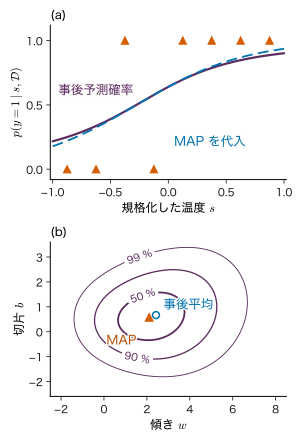
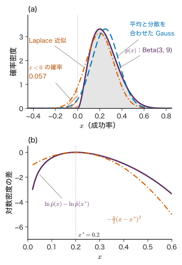
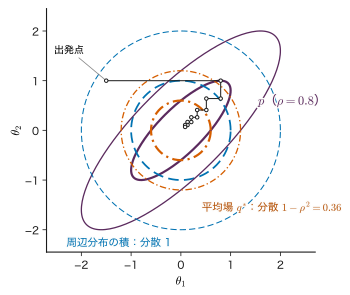
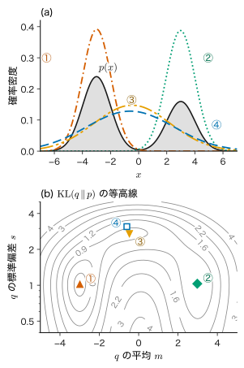
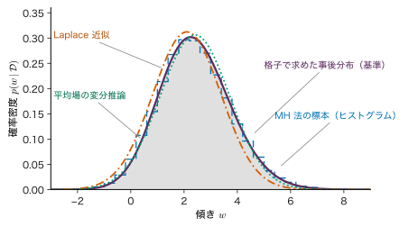
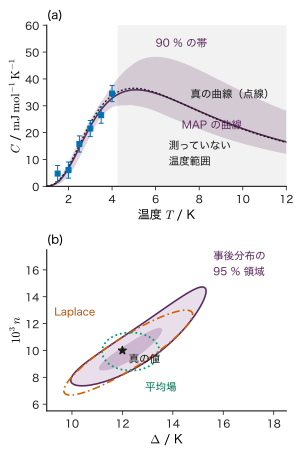

第20章近似推論 — 解けない積分を近似する
- 焼成温度を変えた 8 個の試料のうち 5 個が緻密化した．ロジスティック回帰の事後分布の式は 1 行で書けるのに，その平均も誤差棒も手では計算できない．何を諦めれば計算できるようになるか．
- 近似した事後分布から求めた誤差棒は，本当の誤差棒より広いのか狭いのか．どの近似が，どちら向きに不確かさを歪めるのか．
- 近似の良さの目安として使われる ELBO が大きければ，その近似は正しいと言ってよいか．
ベイズ推定の処方箋は単純である．事前分布に尤度を掛け，全体の面積が 1 になるように割れば事後分布が得られる（第4章 4.3）．ところが「割る」ための数，すなわち周辺尤度（marginal likelihood．証拠（エビデンス）とも呼ぶ）$p(\data)$ $=\int p(\data\mid\bm{\theta})p(\bm{\theta})\,\dd\bm{\theta}$ は積分であり，事前分布と尤度の組が特別な形（共役）でなければ閉じた式にならない．パラメーターが 2 個なら格子を張って数値積分すればよいが，10 個になると格子点の数は $100^{10}=10^{20}$ に達し，計算機でも終わらない．
本章では，この積分を近似で乗り切る二つの方法を学ぶ．一つは，事後分布の山の頂上（MAP 推定値）の周りを 2 次式で近似する Laplace（ラプラス）近似である．もう一つは，扱いやすい分布の族 $q$ の中から事後分布に最も近いものを最適化で探す変分推論（variational inference）である．変分推論の要は，対数周辺尤度を $\ln p(\data)$ $=\ELBO(q)+\KL(q\,\|\,p(\bm{\theta}\mid\data))$ と分ける恒等式であり，これは統計力学の自由エネルギーの変分原理（Gibbs–Bogoliubov の不等式）と同じ形をしている．近似には必ず歪みがある．Laplace 近似は山の頂上を中心にするので非対称な分布の平均を外し，平均場近似は相関のある方向の分散を小さく見積もる．材料のパラメーター推定では，その歪みがそのまま「誤差棒の大きさ」の誤りとして現れる．
- 周辺尤度の積分が難しい理由を，共役でない事後分布と格子積分の計算量で説明できる．
- 対数事後分布のモードの周りの Taylor 展開から Laplace 近似と周辺尤度の近似式を導き，$\mathrm{Beta}(3,9)$ やロジスティック回帰で手計算できる．
- $\ln p(\data)=\ELBO(q)+\KL$ を 1 行ずつ導き，ELBO が対数周辺尤度の下界であること，ELBO の最大化が KL の最小化であることを説明できる．
- 平均場近似の更新式 $\ln q_j^{*}$ $=\Ex_{i\ne j}[\ln p(\data,\bm{\theta})]+\text{定数}$ を導き，2 次元 Gauss 分布で分散の過小評価 $1/\Lambda_{ii}$ を示せる．
- $\KL(q\,\|\,p)$ と $\KL(p\,\|\,q)$ の最小化が，双峰の分布に対してまったく違う近似を与えることを数値で確かめられる．
- ELBO と Helmholtz の自由エネルギーの対応 $\ELBO=-\beta A[q]$ を導ける．
- Laplace 近似・変分推論・MCMC の長所と短所を比べ，材料のパラメーター推定で誤差棒がどう変わるかを判断できる．
入門ルートで読む節：この章は詳しいルートの章である．入門ルートでは 20.13（まとめ）だけを読み，第22章へ進んでよい．
20.1 なぜ厳密な推論が難しいか — 周辺尤度の積分詳しいルート
20.1.1 事後分布の式は書ける，計算はできない
パラメーターをまとめて $\bm{\theta}\in\R^{M}$（$M$ 個の実数を並べた列ベクトル）と書く．データ $\data$ を観測した後の事後分布は，Bayes の定理（第4章 4.3）により
\begin{equation} \begin{aligned} p(\bm{\theta}\mid\data)&=\frac{p(\data\mid\bm{\theta})\,p(\bm{\theta})}{p(\data)},\\ p(\data)&=\int_{\R^{M}}p(\data\mid\bm{\theta})\\ &\qquad\times p(\bm{\theta})\,\dd\bm{\theta} \end{aligned} \label{eq:20-evidence} \end{equation}である．分子の $p(\data,\bm{\theta})$ $=p(\data\mid\bm{\theta})p(\bm{\theta})$（同時分布）は，モデルを決めれば $\bm{\theta}$ の関数としていつでも値を計算できる．難しいのは分母の周辺尤度 $p(\data)$ で，これは $M$ 次元の積分である．事後平均 $\Ex[\bm{\theta}\mid\data]$ $=\int\bm{\theta}\,p(\bm{\theta}\mid\data)\,\dd\bm{\theta}$ や事後分散も同じ種類の積分であり，周辺尤度が計算できなければこれらも計算できない．
本書でこれまでに周辺尤度を厳密に計算できたのは，事前分布と尤度の組が共役だった場合である．Beta 分布と Bernoulli 分布（第4章 4.4），Gauss 分布の平均（4.6），ベイズ線形回帰（第8章 8.7），ガウス過程回帰（第12章 12.7）では，事後分布が事前分布と同じ族に入り，積分が公式で求まった．共役でない最も身近な例はロジスティック回帰である．
20.1.2 走る例：緻密化の成否のロジスティック回帰
本章では次の例を何度も使う（教育用の合成データ）．焼成温度 $T$ を規格化した $s$ $=(T-1300\ ^{\circ}\mathrm{C})/(200\ ^{\circ}\mathrm{C})$（第8章などのデータ A と同じ規格化）を 8 水準 $s_n=-0.875,-0.625,\dots,0.875$（0.25 刻み）に変えて試料を 1 個ずつ焼き，相対密度が 95 % 以上になったら $y_n=1$（緻密化した），そうでなければ $y_n=0$ とする．得られた結果は
| $s_n$ | −0.875 | −0.625 | −0.375 | −0.125 | 0.125 | 0.375 | 0.625 | 0.875 |
|---|---|---|---|---|---|---|---|---|
| $y_n$ | 0 | 0 | 1 | 0 | 1 | 1 | 1 | 1 |
である．$s=-0.375$ で緻密化し $s=-0.125$ で緻密化しなかったので，2 つのクラスは直線（1 点の閾値）では分けられない．モデルは傾き $w$ と切片 $b$ を持つロジスティック回帰
$$ \begin{gathered} p(y_n=1\mid s_n,w,b)=\sigma(ws_n+b),\\ \sigma(a)=\frac{1}{1+e^{-a}} \end{gathered} $$とし（$\sigma(a)$ は sigmoid 関数．本章では必ず引数を付けて書き，標準偏差の $\sigma$ と区別する），パラメーター $\bm{\theta}$ $=(w,b)^{\tp}\in\R^{2}$ には独立な事前分布 $w,b\sim\Normal(0,\sigma_w^{2})$，$\sigma_w^{2}=4$ を置く．同時分布の対数は
\begin{equation} \begin{aligned} &\ln p(\data,\bm{\theta})\\ &\ =\sum_{n=1}^{8}\Bigl[y_n\ln\sigma(ws_n+b)\\ &\qquad+(1-y_n)\\ &\qquad\quad\times\ln\bigl\{1-\sigma(ws_n+b)\bigr\}\Bigr]\\ &\quad-\frac{w^{2}+b^{2}}{2\sigma_w^{2}}\\ &\quad-\ln(2\pi\sigma_w^{2}) \end{aligned} \label{eq:20-logit-joint} \end{equation}である．右辺はどの $(w,b)$ でもすぐに計算できる．しかし $e^{\ln p(\data,\bm{\theta})}$ を $w,b$ について積分した結果は，初等関数でも既知の特殊関数でも書けない．sigmoid の積と Gauss 関数の積は，平方完成のような変形で 1 つの Gauss 関数にまとまらないからである．
この例はパラメーターが 2 個なので，$w$ を 1301 点，$b$ を 1001 点の格子に区切り，各点で式 \eqref{eq:20-logit-joint} を計算して足し合わせれば，事後分布を十分な精度で求められる．結果は $\ln p(\data)=-5.0645$，事後平均 $(\Ex[w],\Ex[b])$ $=(2.424,\ 0.667)$，事後標準偏差 $(1.338,\ 0.836)$ であった．一方，事後分布の最大点（MAP 推定値．Newton 法で求める．第7章 7.9）は $(w,b)=(2.107,\ 0.580)$ で，事後平均とずれている（図20.1(b)）．事後分布が右（$w$ の大きい側）に長い裾を引いているためである．以下の節では，この格子の結果を「正解」として，近似の良し悪しを測る．

20.1.3 格子積分は次元とともに破綻する
格子による数値積分の手間は，各軸の格子点の数を $G$，パラメーターの数を $M$ とすると $G^{M}$ 回の関数評価である．1 回の評価でデータ $N$ 個分の尤度を足すなら，演算の回数はおよそ $NG^{M}$ に比例する．$M$ が 1 増えるごとに $G$ 倍になる，この指数関数的な増え方を次元の呪いと呼ぶ．材料のモデルでは，数個から数十個のパラメーターは珍しくない（原子間ポテンシャルの係数，結晶場のパラメーター，ニューラルネットワークの重みなら数万以上）．格子積分が使えるのは $M$ がせいぜい 3〜4 までである．
例題20.1 格子積分の計算量と，1 個の観測の周辺尤度
(1) 各軸 $G=100$ 点の格子，データ $N=1000$ 個とし，1 個のデータの尤度の計算を 1 回の演算と数える．毎秒 $10^{9}$ 回の演算ができる計算機で，$M=2$ と $M=10$ の格子積分にかかる時間を見積もれ．
(2) 傾きだけのロジスティック回帰 $p(y=1\mid x,w)=\sigma(wx)$ で，事前分布を $w\sim\Normal(0,1)$ とし，$x=1$ で $y=1$ を 1 回だけ観測した．周辺尤度 $p(\data)$ $=\int_{-\infty}^{\infty}\sigma(w)\Normal(w\mid0,1)\,\dd w$ を求めよ．
解答 (1) 演算の回数は $NG^{M}$．$M=2$ なら $1000\times100^{2}=10^{7}$ 回で $10^{7}/10^{9}$ $=0.01\ \mathrm{s}$．$M=10$ なら $1000\times100^{10}=10^{23}$ 回で $10^{23}/10^{9}$ $=10^{14}\ \mathrm{s}$．1 年は約 $3.16\times10^{7}\ \mathrm{s}$ なので約 $3\times10^{6}$ 年かかる．
(2) sigmoid 関数には $\sigma(-w)$ $=\dfrac{1}{1+e^{w}}$ $=\dfrac{e^{-w}}{e^{-w}+1}$ $=1-\sigma(w)$ という対称性がある．$\Normal(w\mid0,1)$ は $w\to-w$ で変わらないので，$w\to-w$ と変数を置き換えると
よって $p(\data)=1/2$ である．このように対称性で解ける特別な場合を除き，sigmoid と Gauss 関数の積の積分は閉じた式にならない．観測が 2 個以上あれば，もう対称性も使えない．
計算できない積分への対処は大きく二つに分かれる．一つは事後分布を扱いやすい関数で置き換える方法（決定論的な近似．本章の Laplace 近似と変分推論），もう一つは事後分布から標本を引いて平均で積分を置き換える方法（確率的な近似．第21章 21.1の Monte Carlo 法と21.6の MCMC）である．前者は速いが偏りが残り，後者は時間をかければ偏りを減らせるが遅い．20.10 節でこの二つを同じ例で比べる．
20.2 Laplace 近似 — モードの周りの Gauss 分布詳しいルート
20.2.1 考え方：対数をとった山を放物線で近似する
事後分布が 1 つの山を持ち，その山がおおむね左右対称なら，山を Gauss 分布で置き換えても大きくは外れないだろう．Gauss 分布の対数は 2 次式（放物線）なので，「対数事後分布を山の頂上の周りで 2 次まで Taylor 展開する」のが自然である．これが Laplace 近似である（図20.2(b)）．
まず 1 変数 $\theta$ で導く．正規化されていない密度 $\tilde{p}(\theta)\equiv p(\data,\theta)$ と，その正規化定数 $Z\equiv\int\tilde{p}(\theta)\,\dd\theta$ $=p(\data)$ を使うと，事後分布は $p(\theta\mid\data)$ $=\tilde{p}(\theta)/Z$ と書ける．$\ln\tilde{p}$ と $\ln p(\theta\mid\data)$ は定数 $\ln Z$ だけ違うので，$\theta$ についての微分は同じである．これが，$Z$ を知らなくても Laplace 近似ができる理由である．
導出：1 変数の Laplace 近似
$\ln\tilde{p}(\theta)$ が最大になる点（モード）を $\theta^{*}$ とする．事後分布のモードなので $\theta^{*}$ $=\theta_{\mathrm{MAP}}$ である．$\theta^{*}$ の周りで 2 次まで Taylor 展開する（大学数学 第4章 4.2）：
$$ \begin{aligned} \ln\tilde{p}(\theta)\approx{}&\ln\tilde{p}(\theta^{*})+\left.\diff{\ln\tilde{p}}{\theta}\right|_{\theta^{*}}(\theta-\theta^{*})\\ &+\frac12\left.\frac{\dd^{2}\ln\tilde{p}}{\dd\theta^{2}}\right|_{\theta^{*}}(\theta-\theta^{*})^{2}. \end{aligned} $$$\theta^{*}$ は最大点なので 1 階微分は 0 である．2 階微分は最大点では 0 以下なので，正の数
$$ \Lambda\equiv-\left.\frac{\dd^{2}\ln\tilde{p}(\theta)}{\dd\theta^{2}}\right|_{\theta=\theta^{*}}\ \ (\gt0) $$を定義する（$\Lambda$ は山の頂上での「曲がり具合」で，曲率と呼ぶ．下で見るように近似の Gauss 分布の分散の逆数，すなわち第4章 4.6 の精度になるので，精度行列と同じ文字 $\Lambda$ を使う）．すると
$$ \ln\tilde{p}(\theta)\approx\ln\tilde{p}(\theta^{*})-\frac{\Lambda}{2}(\theta-\theta^{*})^{2}, $$両辺の指数をとって
$$ \tilde{p}(\theta)\approx\tilde{p}(\theta^{*})\exp\!\left[-\frac{\Lambda}{2}(\theta-\theta^{*})^{2}\right]. $$右辺は平均 $\theta^{*}$，分散 $1/\Lambda$ の Gauss 分布の形である．Gauss 積分 $\int e^{-\Lambda u^{2}/2}\,\dd u$ $=\sqrt{2\pi/\Lambda}$（大学数学 第7章 7.5）を使うと，正規化定数も近似できる：
$$ Z=\int\tilde{p}(\theta)\,\dd\theta\approx\tilde{p}(\theta^{*})\sqrt{\frac{2\pi}{\Lambda}} . $$近似した $\tilde{p}$ をこの $Z$ で割ると，$\tilde p(\theta^{*})$ が約分されて $\sqrt{\Lambda/(2\pi)}\exp[-\Lambda(\theta-\theta^{*})^{2}/2]$ $=\Normal(\theta\mid\theta^{*},\Lambda^{-1})$ が残る．
（導出終わり）
多変数 $\bm{\theta}\in\R^{M}$ でも同じ手順で，2 階微分が Hesse 行列に，Gauss 積分が多次元の Gauss 積分 $\int\exp(-\tfrac12\bm{u}^{\tp}\bm{\Lambda}\bm{u})\,\dd\bm{u}$ $=(2\pi)^{M/2}\abs{\bm{\Lambda}}^{-1/2}$ に置き換わる（2 次形式の符号は大学数学 第6章 6.6）．
公式20.1 Laplace 近似
$\ln p(\data,\bm{\theta})$ の最大点を $\bm{\theta}_{\mathrm{MAP}}\in\R^{M}$ とし，そこでの Hesse 行列の符号を変えた行列を $\bm{\Lambda}\in\R^{M\times M}$ とする（対称で正定値と仮定する．近似分布の精度行列になる）．このとき，事後分布の近似 $q(\bm{\theta})$ と周辺尤度の近似は次の式 \eqref{eq:20-laplace-q}，\eqref{eq:20-laplace-Z} で与えられる．
ここで $\nabla\nabla$ は 2 階偏微分 $\partial^{2}/\partial\theta_i\partial\theta_j$ を並べた $M\times M$ の行列を表す．$\bm{\Lambda}$ は $-\ln p(\data,\bm{\theta})$ の Hesse 行列と同じである（$\ln Z$ は $\bm{\theta}$ によらない）．事前分布が $\Normal(\bm{0},\sigma_w^{2}\bm{I})$ なら，$\bm{\Lambda}$ は「尤度の Hesse 行列（符号を変えたもの）」に $\bm{I}/\sigma_w^{2}$ を足したものになる．式 \eqref{eq:20-laplace-Z} の右辺の第 2・3 項は，山の「体積」の対数であり，第12章の周辺尤度（12.7）でも現れた $-\tfrac12\ln\abs{\cdot}$ と同じ役割をする．
20.2.2 手計算：$\mathrm{Beta}(3,9)$ を Gauss 分布で近似する
正解が分かっている分布で Laplace 近似を試す．成功率 $x\in(0,1)$ の事後分布が $\mathrm{Beta}(3,9)$ の場合を考える．たとえば一様な事前分布 $\mathrm{Beta}(1,1)$ のもとで 10 回中 2 回成功したときの事後分布がこれである（第4章 4.4）．Beta 分布については第3章 3.8．
例題20.2 $\mathrm{Beta}(3,9)$ の Laplace 近似
$\tilde{p}(x)=x^{2}(1-x)^{8}$（$0\lt x\lt1$）の Laplace 近似を求め，(1) モード $x^{*}$ と曲率 $\Lambda$，(2) 近似の平均・分散と真の平均・分散，(3) 正規化定数の近似と真の値 $Z=B(3,9)$，(4) 近似した Gauss 分布が $x\lt0$ に置く確率，を求めよ．
解答 (1) $\ln\tilde{p}=2\ln x+8\ln(1-x)$．1 階微分 $\dfrac{2}{x}-\dfrac{8}{1-x}=0$ から $2(1-x)=8x$，$x^{*}=0.2$．2 階微分は $-\dfrac{2}{x^{2}}-\dfrac{8}{(1-x)^{2}}$ なので
$$ \Lambda=\frac{2}{0.2^{2}}+\frac{8}{0.8^{2}}=50+12.5=62.5 . $$(2) 近似は $q(x)$ $=\Normal(x\mid0.2,\ 1/62.5)$．平均 0.2，分散 $1/62.5=0.016$（標準偏差 0.1265）．真の値は，$\mathrm{Beta}(a,b)$ の平均 $a/(a+b)$ と分散 $ab/[(a+b)^{2}(a+b+1)]$ から，平均 $3/12=0.25$，分散 $27/(144\times13)$ $=27/1872$ $=0.014423$（標準偏差 0.1201）．
(3) $\ln\tilde{p}(x^{*})$ $=2\ln0.2+8\ln0.8$ $=-3.2189-1.7851$ $=-5.0040$．$\tfrac12\ln(2\pi/62.5)$ $=\tfrac12\ln0.10053$ $=-1.1486$．よって $\ln Z\approx-6.1527$．真の値は $B(3,9)$ $=\dfrac{2!\,8!}{11!}$ $=\dfrac{1}{495}$，$\ln Z=-\ln495=-6.2046$．$Z$ の比にすると $e^{-6.1527+6.2046}=1.053$ で，5 % 過大である．
(4) $q$ のもとで $x\lt0$ となる確率は，標準化 $z=(0-0.2)/0.1265=-1.581$ の累積分布関数 $\Phi(-1.581)=0.0569$．約 5.7 % の確率を，成功率としてありえない負の値に置いている．

図20.2 から，Laplace 近似の性格が読み取れる．頂上の位置と曲がり具合だけを合わせるので，(i) 中心は平均ではなくモードに来る．$\mathrm{Beta}(3,9)$ は右に長い裾を持つので，平均 0.25 より左の 0.2 に中心が来る．(ii) 分散も頂上の局所的な曲がりで決まり，裾の重さを反映しない．(iii) Gauss 分布は全実数に確率を置くので，台（確率が正の範囲）が $0\lt x\lt1$ に限られる分布では，台の外に確率が漏れる．
例題20.3 1 個の観測のロジスティック回帰を Laplace 近似する
例題20.1 (2) の事後分布 $p(w\mid\data)\propto\sigma(w)\Normal(w\mid0,1)$ を Laplace 近似する．(1) Newton 法を $w_0=0$ から 2 回行って MAP 推定値を求めよ．(2) 曲率 $\Lambda$ と近似の標準偏差を求めよ．(3) 式 \eqref{eq:20-laplace-Z} で周辺尤度を近似し，厳密な値 $1/2$ と比べよ．
解答 $\ln\tilde{p}(w)$ $=\ln\sigma(w)-\tfrac12w^{2}-\tfrac12\ln2\pi$．$\diff{}{w}\ln\sigma(w)$ $=1-\sigma(w)$（第9章 9.3の sigmoid の微分 $\sigma'=\sigma(1-\sigma)$ を $\sigma$ で割ったもの）なので
$$ \begin{aligned} g(w)&\equiv\diff{\ln\tilde{p}}{w}=1-\sigma(w)-w,\\ -\frac{\dd^{2}\ln\tilde{p}}{\dd w^{2}}&=\sigma(w)\bigl(1-\sigma(w)\bigr)+1 . \end{aligned} $$(1) Newton 法の更新は $w\leftarrow w+g(w)\big/\bigl[\sigma(w)(1-\sigma(w))+1\bigr]$．$w_0=0$：$\sigma=0.5$，$g=0.5$，分母 $1.25$ なので $w_1=0.4$．$w_1=0.4$：$\sigma(0.4)=0.59869$，$g=1-0.59869-0.4=0.00131$，分母 $0.59869\times0.40131+1$ $=1.24026$ なので $w_2$ $=0.4+0.00131/1.24026$ $=0.40106$．次の更新の変化は $10^{-8}$ 程度なので $w^{*}=0.4011$．
(2) $\sigma(w^{*})=0.59894$ を入れて $\Lambda$ $=0.59894\times0.40106+1$ $=1.2402$．近似の標準偏差は $1/\sqrt{1.2402}=0.898$．（格子で計算した真の事後平均は 0.413，標準偏差は 0.911 で，近似はやや小さい．）
(3) $\tilde{p}(w^{*})\sqrt{2\pi/\Lambda}$ $=\sigma(w^{*})\dfrac{e^{-w^{*2}/2}}{\sqrt{2\pi}}\sqrt{\dfrac{2\pi}{\Lambda}}$ $=\dfrac{0.59894\times e^{-0.08042}}{\sqrt{1.2402}}$ $=\dfrac{0.59894\times0.92273}{1.11364}$ $=0.4963$．厳密な値 0.5 より 0.7 % 小さい．
走る例（表20.1）でも同じ手順で，Newton 法の収束点 $\bm{\theta}_{\mathrm{MAP}}$ $=(2.107,\ 0.580)^{\tp}$ と
$$ \begin{aligned} \bm{\Lambda}&=\begin{pmatrix}\sum_n r_n s_n^{2}+\sigma_w^{-2} & \sum_n r_n s_n\\ \sum_n r_n s_n & \sum_n r_n+\sigma_w^{-2}\end{pmatrix}\\ &=\begin{pmatrix}0.6332&-0.1872\\-0.1872&1.6919\end{pmatrix} \end{aligned} $$が得られる（$r_n=\hat{y}_n(1-\hat{y}_n)$，$\hat{y}_n$ $=\sigma(w_{\mathrm{MAP}}s_n+b_{\mathrm{MAP}})$．第9章 9.3 の Hesse 行列に事前分布の $\bm{I}/\sigma_w^{2}$ を足したもの）．$\bm{\Lambda}^{-1}$ の対角成分の平方根から，近似の標準偏差は $w$ が 1.278，$b$ が 0.782 となる．格子の値 1.338，0.836 より 5 % ほど小さく，中心も事後平均 $(2.424,0.667)$ から左にずれている．周辺尤度の近似は式 \eqref{eq:20-laplace-Z} から $\ln p(\data)\approx-5.118$（格子では $-5.0645$）である．
20.2.3 Laplace 近似の限界
- 歪み（非対称）：中心がモードに来るので，裾の長い側の確率を取りこぼす．$\mathrm{Beta}(3,9)$ では平均を 0.25 から 0.2 へ，走る例では $w$ を 2.42 から 2.11 へ小さく見積もった．
- 多峰：展開する山は 1 つだけである．峰が 2 つあれば，どちらの峰で展開したかで結果が変わり，もう一方の峰の確率を丸ごと失う（20.7 節の双峰の例で数値を示す）．
- 境界：台が限られた変数（成功率 $0\lt x\lt1$，分散や濃度 $\gt0$）では，Gauss 分布が台の外に確率を置く．このとき $\KL(q\,\|\,p)$ は無限大になる（$p=0$ の所で $q\gt0$ なので $\ln(q/p)=\infty$．20.7 節）．対策は，台が全実数になる変数に変換してから近似することである（成功率ならロジット（logit）$u=\ln[x/(1-x)]$，正の量なら $\ln x$．演習20.2，20.11 節）．
- 変数の取り方による：密度は変数変換で形が変わる（第2章 2.6）ので，モードの位置も近似の良さも，どの変数で展開するかで変わる．
逆に，データが多いと事後分布は Gauss 分布に近づく（Bernstein–von Mises の定理として知られる性質．モデルが滑らかで，真のパラメーターが事前分布の台の内側にあるなどの条件のもとで成り立つ．ここでは言明だけにとどめ，証明は van der Vaart (1998) の 10 章に譲る）ので，Laplace 近似は良くなる．Laplace 近似で事後モーメントを高精度に近似する工夫は Tierney & Kadane (1986) に始まる．
次のシミュレーターで，Laplace 近似と真の分布の違いを数値で確かめる．装置の標的は 1 次元で，横軸の変数を $x$，正規化されていない密度を $\tilde{p}(x)$，正規化定数を $Z$ と書いている．本文の $\theta$，$p(\data,\theta)$，$p(\data)$ にそれぞれ当たる．装置は正解を示すために $Z$ を格子の上の数値積分（区間 4000 の Simpson 則）で求めている．実際の推論では $Z$ が計算できないから近似を使うのであり，この点が装置の簡略化である．
シミュレーター20.1 Laplace 近似と真の分布を比べる
1 次元の標的分布を Laplace 近似と 2 種類の Gauss 近似で置き換え，平均・分散・KL・正規化定数の近似値を真の値と並べて確かめる装置である．
操作と観察
- 開いた直後の既定（標的分布「歪んだ単峰 Beta」，Beta の $a=3$，$b=9$）のまま，表「近似の数値」の「$p$（真）」と「Laplace」の列を読む → 平均 0.2500 と 0.2000，分散 0.01442 と 0.01600．例題20.2 (2) と同じ値である．上の図で，Laplace 近似（▲の破線）が $x\lt0$ の斜線の範囲にはみ出していることを見る．
- 同じ表の Laplace の KL($q$‖$p$) の欄 → 「∞※」と表示され，表の下の注に「$q$ が $0\lt x\lt1$ の外に確率 0.0569 を置くので KL($q$‖$p$) = ∞」とある．例題20.2 (4) の 0.0569 と比べる．
- 「式に入れる $q$」を「Laplace」にして「いまの数値を式に入れると」を読む → モード $x^{*}=0.2$，$\Lambda=2/0.2^{2}+8/0.8^{2}=62.5$，$\ln Z\approx-6.1527$ と，格子で求めた $\ln Z=-6.2046$ が並ぶ．式 \eqref{eq:20-laplace-Z}（$M=1$）と比べる．
- Beta の $a$，$b$ をどちらも 10 にする（対称な単峰）→ Laplace の平均は真の平均と同じ 0.5000 になるが，分散は 0.01389 で真の 0.01190 より大きい．$\ln Z$ の近似は $-13.696$（真は $-13.736$）．
操作後の問い
- 手順 1 で，Laplace 近似の平均が真の平均より小さいのはなぜか．
答えの例
Laplace 近似の中心はモード $x^{*}=(a-1)/(a+b-2)=0.2$ であり，平均 $a/(a+b)=0.25$ ではない．$\mathrm{Beta}(3,9)$ は右に長い裾を持つので，平均はモードより右にある．Laplace 近似は頂上の位置と曲がり具合だけを見るので，裾の重みを取りこぼす．
- 手順 4 の対称な $\mathrm{Beta}(10,10)$ では平均は一致するのに，分散が真の値より大きくなるのはなぜか．
答えの例
$\mathrm{Beta}(10,10)$ の密度は $x^{9}(1-x)^{9}$ で，$x=0$，$1$ の端で 0 に落ちるため，同じ頂上の曲率を持つ Gauss 分布より裾が軽い（$x=0.5$ から離れると放物線より速く下がる）．Laplace 近似の分散 $1/\Lambda=1/72$ は頂上の曲率だけで決まり，裾の軽さを反映しないので，真の分散 $100/(400\times21)=0.01190$ より大きくなる．対称でも，Gauss 分布でない限り Laplace 近似の分散は一般に真の値と一致しない．
20.3 変分推論の考え方 — 対数周辺尤度を ELBO と KL に分ける詳しいルート
20.3.1 近似を「最適化の問題」にする
Laplace 近似は 1 点（モード）の情報だけから Gauss 分布を作った．分布全体を見て「最も近い」近似を選ぶにはどうすればよいか．変分推論は，扱いやすい分布の集まり（族）$\mathcal{Q}$ を先に決め，その中で事後分布に最も近い $q$ を探す．近さの尺度には KL ダイバージェンス（第5章 5.4）を使う：
$$ \begin{gathered} q^{*}=\argmin_{q\in\mathcal{Q}}\ \KL\bigl(q(\bm{\theta})\,\|\,p(\bm{\theta}\mid\data)\bigr),\\ \KL(q\,\|\,p)=\int q(\bm{\theta})\ln\frac{q(\bm{\theta})}{p(\bm{\theta}\mid\data)}\,\dd\bm{\theta} . \end{gathered} $$ここで困るのは，KL の中に計算できない $p(\bm{\theta}\mid\data)$ があることである．ところが次の恒等式により，$\KL$ を最小にすることは，計算できる量（ELBO）を最大にすることと同じになる．「変分」の名は，関数 $q$ を少しずつ変えて汎関数の最大を探す変分法に由来する．
20.3.2 恒等式の導出
導出：$\ln p(\data)$ $=\ELBO(q)+\KL(q\,\|\,p(\bm{\theta}\mid\data))$
$q(\bm{\theta})$ を任意の確率密度とする（$\int q\,\dd\bm{\theta}=1$）．$\ln p(\data)$ は $\bm{\theta}$ によらない定数なので，$q$ で期待値をとっても変わらない：
$$ \ln p(\data)=\int q(\bm{\theta})\ln p(\data)\,\dd\bm{\theta}=\Ex_{q}\bigl[\ln p(\data)\bigr]. $$乗法定理 $p(\data,\bm{\theta})$ $=p(\bm{\theta}\mid\data)\,p(\data)$ から $p(\data)$ $=p(\data,\bm{\theta})/p(\bm{\theta}\mid\data)$ を代入する：
$$ \ln p(\data)=\Ex_{q}\!\left[\ln\frac{p(\data,\bm{\theta})}{p(\bm{\theta}\mid\data)}\right]. $$対数の中の分子と分母に同じ $q(\bm{\theta})$ を掛ける（値は変わらない）：
$$ \ln p(\data)=\Ex_{q}\!\left[\ln\frac{p(\data,\bm{\theta})}{q(\bm{\theta})}\cdot\frac{q(\bm{\theta})}{p(\bm{\theta}\mid\data)}\right]. $$積の対数を和に分け，期待値の線形性を使う：
$$ \begin{aligned} \ln p(\data)={}&\underbrace{\Ex_{q}\!\left[\ln\frac{p(\data,\bm{\theta})}{q(\bm{\theta})}\right]}_{\ELBO(q)}\\ &+\underbrace{\Ex_{q}\!\left[\ln\frac{q(\bm{\theta})}{p(\bm{\theta}\mid\data)}\right]}_{\KL(q\,\|\,p(\bm{\theta}\mid\data))}. \end{aligned} $$第 2 項は KL ダイバージェンスの定義そのものである．
（導出終わり）
この分解から三つのことが分かる．
- ELBO は下界：KL は常に 0 以上（Gibbs の不等式．第5章 5.4）なので $\ELBO(q)\le\ln p(\data)$．等号は $q=p(\bm{\theta}\mid\data)$ のときだけ成り立つ．ELBO は evidence lower bound（証拠の下界．evidence は周辺尤度の別名）の略である．
- ELBO は計算できる：$\ELBO(q)$ に現れるのは $p(\data,\bm{\theta})$ と $q$ だけで，どちらも値を計算できる．期待値 $\Ex_q$ は，$q$ を扱いやすく選べば解析的に，そうでなくても $q$ から引いた標本で計算できる（20.9 節）．
- ELBO の最大化 ＝ KL の最小化：左辺 $\ln p(\data)$ は $q$ によらない定数なので，$q$ を変えて ELBO を 1 増やせば KL はちょうど 1 減る．
同じ不等式 $\ELBO\le\ln p(\data)$ は，Jensen の不等式（凹関数 $\ln$ では $\Ex[\ln X]\le\ln\Ex[X]$）からも 1 行で出る（演習20.3）．ただしその導き方では，差が KL であることまでは見えない．EM 法の「対数尤度は ELBO と KL の和」（第17章 17.7）は，この分解を潜在変数について使ったものである．
例題20.4 2 つの仮説で ELBO と KL を数える
ある粉末の主相が相 1 か相 2 かを考える（$\theta\in\{1,2\}$）．事前確率は $p(\theta=1)=p(\theta=2)=0.5$，ある回折ピークの観測 $\data$ の尤度は $p(\data\mid\theta=1)=0.2$，$p(\data\mid\theta=2)=0.05$ とする（教育用の数値）．(1) $p(\data)$ と事後分布を求めよ．(2) $q=(0.5,0.5)$ と $q=(0.9,0.1)$ について，ELBO と KL を求め，和が $\ln p(\data)$ になることを確かめよ．
解答 (1) 同時確率は $p(\data,\theta$ $=1)$ $=0.5\times0.2$ $=0.1$，$p(\data,\theta$ $=2)$ $=0.5\times0.05$ $=0.025$．和をとって $p(\data)=0.125$，$\ln p(\data)=-2.0794$．事後分布は $(0.1,\ 0.025)/0.125$ $=(0.8,\ 0.2)$．
(2) 離散の場合，$\ELBO(q)$ $=\sum_{\theta}q(\theta)\ln\dfrac{p(\data,\theta)}{q(\theta)}$，$\KL$ $=\sum_{\theta}q(\theta)\ln\dfrac{q(\theta)}{p(\theta\mid\data)}$ である．
$q=(0.5,0.5)$：$\ELBO$ $=0.5\ln\dfrac{0.1}{0.5}+0.5\ln\dfrac{0.025}{0.5}$ $=0.5(-1.6094)+0.5(-2.9957)$ $=-2.3026$．$\KL$ $=0.5\ln\dfrac{0.5}{0.8}+0.5\ln\dfrac{0.5}{0.2}$ $=0.5(-0.4700)+0.5(0.9163)$ $=0.2231$．和は $-2.0794$．
$q=(0.9,0.1)$：$\ELBO$ $=0.9\ln\dfrac{0.1}{0.9}+0.1\ln\dfrac{0.025}{0.1}$ $=0.9(-2.1972)+0.1(-1.3863)$ $=-2.1161$．$\KL$ $=0.9\ln\dfrac{0.9}{0.8}+0.1\ln\dfrac{0.1}{0.2}$ $=0.9(0.1178)+0.1(-0.6931)$ $=0.0367$．和は $-2.0794$．
どちらの $q$ でも和は同じ $\ln p(\data)$ であり，事後分布に近い $q=(0.9,0.1)$ のほうが ELBO が大きく KL が小さい（図20.3）．
20.4 ELBO の二つの形 — 当てはまりと事前分布からの離れ詳しいルート
ELBO の定義 \eqref{eq:20-decomp} の $\ln p(\data,\bm{\theta})$ を分けると，二つの見方ができる．
導出：ELBO の二つの形
(i) 第 2 項 $-\Ex_q[\ln q]$ は $q$ のエントロピー $H[q]$（第5章 5.2．連続なら微分エントロピー．5.3）である．よって
$$ \ELBO(q)=\Ex_{q}[\ln p(\data,\bm{\theta})]+H[q]. $$(ii) 乗法定理 $\ln p(\data,\bm{\theta})$ $=\ln p(\data\mid\bm{\theta})+\ln p(\bm{\theta})$ を代入して，事前分布の項を $q$ の項と組にする：
$$ \begin{aligned} \ELBO(q)={}&\Ex_{q}[\ln p(\data\mid\bm{\theta})]\\ &+\Ex_{q}[\ln p(\bm{\theta})]-\Ex_{q}[\ln q(\bm{\theta})]\\ ={}&\Ex_{q}[\ln p(\data\mid\bm{\theta})]-\Ex_{q}\!\left[\ln\frac{q(\bm{\theta})}{p(\bm{\theta})}\right]\\ ={}&\Ex_{q}[\ln p(\data\mid\bm{\theta})]\\ &-\KL\bigl(q(\bm{\theta})\,\|\,p(\bm{\theta})\bigr). \end{aligned} $$（導出終わり）
第 2 の形は，ELBO の最大化が二つの要求の綱引きであることを示す．第 1 項（期待対数尤度）は $q$ をデータをよく説明する $\bm{\theta}$ に集めたがり，第 2 項は $q$ を事前分布から離しすぎないように引き戻す．データが多いほど第 1 項が強くなり，$q$ は狭くなる．符号の取り違えが起こりやすいので，表にまとめる．
| 形 | 項 | ELBO への符号 | その項を大きくするために $q$ がしたがること |
|---|---|---|---|
| (i) | $\Ex_q[\ln p(\data,\bm{\theta})]$ | $+$ | 同時分布の大きい所（MAP の近く）に集まる |
| $H[q]=-\Ex_q[\ln q]$ | $+$ | 広がる（エントロピーを大きくする） | |
| (ii) | $\Ex_q[\ln p(\data\mid\bm{\theta})]$ | $+$ | 尤度の大きい所に集まる（当てはまり） |
| $\KL(q\,\|\,p(\bm{\theta}))$ | $-$ | 事前分布に近いままでいる | |
| 恒等式 | $\KL(q\,\|\,p(\bm{\theta}\mid\data))$ | $\ln p(\data)=\ELBO+\KL$ | ELBO を上げることは，この KL を下げること |
形 (i) は「集まりたい力」と「広がりたい力」の釣り合いであり，20.8 節で統計力学の「エネルギー」と「エントロピー」の釣り合いに対応させる．形 (ii) は変分オートエンコーダー（20.9 節）で「再構成の当てはまり − 事前分布からの離れ」として使われる．
例題20.5 Gauss 分布の平均：ELBO の最大化は厳密な事後分布を再現する
測定値 $x_n\sim\Normal(\mu,\sigma^{2})$（$\sigma^{2}=1$ は既知），事前分布 $\mu\sim\Normal(\mu_0,\sigma_0^{2})$（$\mu_0=0$，$\sigma_0^{2}=1$）とし，データ $\data=\{0.5,\,1.0,\,1.5\}$（$N=3$）を得た（教育用の数値）．近似の族を Gauss 分布 $q(\mu)$ $=\Normal(\mu\mid m,s^{2})$ とする．(1) 式 \eqref{eq:20-elbo2} の第 2 の形で $\ELBO(m,s)$ を書け．(2) ELBO を最大にする $m,s^{2}$ を求め，第4章 4.6の厳密な事後分布と比べよ．(3) 最大の ELBO の値を求めよ．
解答 (1) $\ln p(\data\mid\mu)$ $=-\dfrac N2\ln(2\pi\sigma^{2})-\dfrac{1}{2\sigma^{2}}\sum_n(x_n-\mu)^{2}$．$q$ のもとで $\Ex_q[(x_n-\mu)^{2}]$ $=(x_n-m)^{2}+s^{2}$（$\mu=m+(\mu-m)$ と分けると交差項の期待値は 0）なので
$$ \begin{aligned} &\Ex_{q}[\ln p(\data\mid\mu)]\\ &\ =-\frac N2\ln(2\pi\sigma^{2})\\ &\qquad-\frac{1}{2\sigma^{2}}\Bigl[\sum_n(x_n-m)^{2}+Ns^{2}\Bigr]. \end{aligned} $$1 変数 Gauss 分布どうしの KL（第5章 5.6）から $\KL(q\,\|\,p(\mu))$ $=\ln\dfrac{\sigma_0}{s}+\dfrac{s^{2}+(m-\mu_0)^{2}}{2\sigma_0^{2}}-\dfrac12$．ELBO はこの 2 つの差である．
(2) $m$ で偏微分して 0 とおく：$\dfrac{1}{\sigma^{2}}\sum_n(x_n-m)-\dfrac{m-\mu_0}{\sigma_0^{2}}$ $=0$，すなわち $m\Bigl(\dfrac{N}{\sigma^{2}}+\dfrac{1}{\sigma_0^{2}}\Bigr)$ $=\dfrac{N\bar{x}}{\sigma^{2}}+\dfrac{\mu_0}{\sigma_0^{2}}$．$s$ で偏微分して 0 とおく：$-\dfrac{Ns}{\sigma^{2}}+\dfrac1s-\dfrac{s}{\sigma_0^{2}}$ $=0$，すなわち $\dfrac{1}{s^{2}}$ $=\dfrac{N}{\sigma^{2}}+\dfrac{1}{\sigma_0^{2}}$．これは第4章の厳密な事後分布 $\mu_N$，$\sigma_N^{2}$ の式と同じである．数値は $1/s^{2}=3+1=4$ より $s^{2}=0.25$，$m$ $=0.25\times(3\times1.0+0)$ $=0.75$．
(3) $\sum_n(x_n-0.75)^{2}$ $=0.0625+0.0625+0.5625$ $=0.6875$．期待対数尤度は $-\tfrac32\ln2\pi-\tfrac12(0.6875+3\times0.25)$ $=-2.7568-0.7188$ $=-3.4756$．$\KL$ $=\ln\dfrac{1}{0.5}+\dfrac{0.25+0.5625}{2}-\dfrac12$ $=0.6931+0.4063-0.5$ $=0.5994$．ELBO $=-3.4756-0.5994=-4.0750$．厳密な $\ln p(\data)$（$\bm{x}\sim\Normal(\bm{0},\sigma^{2}\bm{I}+\sigma_0^{2}\bm{1}\bm{1}^{\tp})$ の対数密度）も $-4.0750$ で一致する．真の事後分布が族の中にあれば $\KL=0$ まで下がり，ELBO は対数周辺尤度に等しくなる．
20.5 平均場近似 — 因子ごとに最適化する詳しいルート
20.5.1 分解の仮定
変分推論で最もよく使われる族は，パラメーターをいくつかの組 $\bm{\theta}$ $=(\bm{\theta}_1,\dots,\bm{\theta}_K)$ に分け，組どうしは独立だと仮定するものである：
\begin{equation} q(\bm{\theta})=\prod_{i=1}^{K}q_i(\bm{\theta}_i) \label{eq:20-mf} \end{equation}これを平均場近似（mean-field approximation）という．各 $q_i$ の形（Gauss 分布など）は仮定しない．仮定するのは「独立」だけである．名前は，統計力学で 1 つのスピンに対する他のスピンの影響を「平均の場」で置き換える近似に由来する（20.8 節）．
20.5.2 最適な因子の導出
導出：$\ln q_j^{*}(\bm{\theta}_j)$ $=\Ex_{i\ne j}[\ln p(\data,\bm{\theta})]+\text{定数}$
$q_j$ 以外の因子を固定し，ELBO を $q_j$ の関数として見る．$\ln q=\sum_i\ln q_i$ なので，ELBO の第 2 項は
$$ -\Ex_{q}[\ln q]=-\Ex_{q_j}[\ln q_j]-\sum_{i\ne j}\Ex_{q_i}[\ln q_i], $$右辺の和は $q_j$ によらない．第 1 項は，$q_j$ 以外の因子での期待値を先にとる（積分の順序を入れ替える）：
$$ \begin{aligned} &\Ex_{q}[\ln p(\data,\bm{\theta})]\\ &\ =\int q_j(\bm{\theta}_j)\underbrace{\left[\int\ln p(\data,\bm{\theta})\prod_{i\ne j}q_i\,\dd\bm{\theta}_i\right]}_{\Ex_{i\ne j}[\ln p(\data,\bm{\theta})]}\dd\bm{\theta}_j . \end{aligned} $$括弧の中は $\bm{\theta}_j$ だけの関数である．そこで，正規化した分布 $\tilde{q}_j(\bm{\theta}_j)\equiv\exp\bigl(\Ex_{i\ne j}[\ln p(\data,\bm{\theta})]\bigr)/C_j$ を定義する（$C_j$ は $\int\tilde{q}_j\,\dd\bm{\theta}_j$ $=1$ にする定数）．$\Ex_{i\ne j}[\ln p]$ $=\ln\tilde{q}_j+\ln C_j$ を代入すると
$$ \begin{aligned} \ELBO&=\int q_j\ln\tilde{q}_j\,\dd\bm{\theta}_j-\int q_j\ln q_j\,\dd\bm{\theta}_j+\text{定数}\\ &=-\KL\bigl(q_j\,\|\,\tilde{q}_j\bigr)+\text{定数}. \end{aligned} $$ここで「定数」は $q_j$ によらない量（$\ln C_j$ と $i\ne j$ のエントロピー）である．KL は 0 以上で，$q_j=\tilde{q}_j$ のとき 0 になるので，ELBO を最大にする $q_j$ は $q_j^{*}=\tilde{q}_j$ である．
（導出終わり）
右辺の $\Ex_{i\ne j}$ は「$j$ 番目以外の因子 $q_i$ で平均する」ことを表す．定数は正規化で決まるので，実際には右辺の $\bm{\theta}_j$ への依存の形（2 次式なら Gauss 分布，など）を読み取ればよい．$\ln p(\data,\bm{\theta})$ が計算できれば使え，$p(\data)$ は要らない．
式 \eqref{eq:20-mf-opt} の右辺は他の因子に依存するので，一度には解けない．そこで $j=1,\dots,K$ の順に，他を固定して $q_j$ を更新することを繰り返す（座標上昇法．CAVI と呼ばれることもある）．各更新は ELBO を下げない（その $q_j$ について最大にしているから）ので，ELBO は単調に増えて収束する．ただし収束先は局所的な最大であり，出発点によって変わりうる（例題20.6，20.7 節）．
例題20.6 2 値の 2 変数を平均場で近似する
2 つの 2 値変数 $\theta_1,\theta_2\in\{0,1\}$ の分布が $p(0,0)=p(1,1)=0.45$，$p(0,1)=p(1,0)=0.05$ であるとする（強く同調する 2 変数．教育用の数値）．平均場 $q(\theta_1,\theta_2)$ $=q_1(\theta_1)q_2(\theta_2)$ で近似し，$a\equiv q_1(1)$，$b\equiv q_2(1)$ と書く．(1) 式 \eqref{eq:20-mf-opt} から $a$ の更新式を導け．(2) $b=0.7$ から出発して $a$ を 1 回更新せよ．(3) 収束先と，そのときの $\KL(q\,\|\,p)$ を，$a=b=0.5$（一様な $q$）と比べよ．
解答 (1) $\ln q_1^{*}(\theta_1)$ $=\sum_{\theta_2}q_2(\theta_2)\ln p(\theta_1,\theta_2)+\text{定数}$．$\theta_1=1$ と $\theta_1=0$ の差をとると定数が消える：
$$ \begin{aligned} \ln\frac{a}{1-a}&=b\ln\frac{0.45}{0.05}+(1-b)\ln\frac{0.05}{0.45}\\ &=(2b-1)\ln9 . \end{aligned} $$よって $a$ $=\sigma\bigl((2b-1)\ln9\bigr)$（$\sigma(\cdot)$ は sigmoid 関数）．対称性から $b$ $=\sigma\bigl((2a-1)\ln9\bigr)$．
(2) $(2\times0.7-1)\ln9$ $=0.4\times2.1972$ $=0.8789$．$e^{0.8789}=2.408$ なので $a=2.408/3.408=0.7066$．
(3) 更新を繰り返すと $a=b=0.75$ に収束する（$a=0.75$ なら $(2a-1)\ln9=0.5\ln9=\ln3$，$\sigma(\ln3)=3/4$ で釣り合う）．このとき $q(1,1)=0.5625$，$q(0,0)=0.0625$，$q(0,1)=q(1,0)=0.1875$ で，$\KL(q\,\|\,p)=0.498$．一様な $q$（$a=b=0.5$．これも更新式の固定点）では $\KL=0.511$ なので，片方の状態 $(1,1)$ に寄った近似のほうが KL は小さい．$b=0.3$ から出発すれば，対称な $a=b=0.25$ に収束する．真の分布は $(0,0)$ と $(1,1)$ を同じ重みで持つのに，平均場近似は一方を選ぶ．この「対称性の破れ」は 20.7 節の「一方の峰に寄る」性質と，20.8 節の強磁性体の平均場理論に通じる．
20.6 例：相関のある 2 次元 Gauss 分布の平均場近似詳しいルート
平均場近似の性格を，解析的に解ける例で調べる．標的を 2 次元 Gauss 分布 $p(\bm{\theta})$ $=\Normal(\bm{\theta}\mid\bm{\mu},\bm{\Lambda}^{-1})$ とする．$\bm{\theta}$ $=(\theta_1,\theta_2)^{\tp}$，$\bm{\mu}\in\R^{2}$ は平均，$\bm{\Lambda}\in\R^{2\times2}$ は共分散行列の逆行列（精度行列）で，対称・正定値である．精度行列を使うと対数密度が簡単に書ける：
$$ \begin{aligned} \ln p(\bm{\theta})={}&-\frac12\Lambda_{11}(\theta_1-\mu_1)^{2}\\ &-\Lambda_{12}(\theta_1-\mu_1)(\theta_2-\mu_2)\\ &-\frac12\Lambda_{22}(\theta_2-\mu_2)^{2}+\text{定数}. \end{aligned} $$（実際の推論でこの $p$ が事後分布として出てくれば平均場近似は要らないが，正解が分かっているので，近似の歪みを正確に測れる．）
導出：最適な因子 $q_1^{*}$
式 \eqref{eq:20-mf-opt} で $j=1$ とし，$q_2$ についての期待値をとる．$\theta_1$ を含まない項は定数に入れる．$q_2$ の平均を $m_2\equiv\Ex_{q_2}[\theta_2]$ と書くと，$\theta_1$ を含む項の期待値は
$$ \begin{aligned} \ln q_1^{*}(\theta_1)={}&-\frac12\Lambda_{11}(\theta_1-\mu_1)^{2}\\ &-\Lambda_{12}(\theta_1-\mu_1)(m_2-\mu_2)+\text{定数}. \end{aligned} $$（交差項は $\theta_2$ について 1 次なので，期待値で $\theta_2$ が $m_2$ に置き換わる．）$\theta_1$ の 2 次式なので $q_1^{*}$ は Gauss 分布である．平方完成する：
$$ \begin{aligned} \ln q_1^{*}(\theta_1)&=-\frac{\Lambda_{11}}{2}\Bigl[\theta_1-\mu_1+\frac{\Lambda_{12}}{\Lambda_{11}}(m_2-\mu_2)\Bigr]^{2}\\ &\quad+\text{定数}. \end{aligned} $$よって $q_1^{*}(\theta_1)$ $=\Normal(\theta_1\mid m_1,\ \Lambda_{11}^{-1})$，$m_1$ $=\mu_1-\Lambda_{11}^{-1}\Lambda_{12}(m_2-\mu_2)$．$q_2^{*}$ も添字を入れ替えて同じ形になる．
（導出終わり）
平均の更新式 $m_1$ $=\mu_1-\Lambda_{11}^{-1}\Lambda_{12}(m_2-\mu_2)$，$m_2$ $=\mu_2-\Lambda_{22}^{-1}\Lambda_{12}(m_1-\mu_1)$ は，$m_1=\mu_1$，$m_2=\mu_2$ で同時に満たされる（$\Lambda_{11}\Lambda_{22}\ne\Lambda_{12}^{2}$ なら解はこれだけ）．したがって平均は正しく求まる．問題は分散である．
不等号は 2×2 の場合に直接確かめられる．$(\bm{\Lambda}^{-1})_{11}$ $=\Lambda_{22}/(\Lambda_{11}\Lambda_{22}-\Lambda_{12}^{2})$ なので，$(\bm{\Lambda}^{-1})_{11}-1/\Lambda_{11}$ $=\Lambda_{12}^{2}/[\Lambda_{11}(\Lambda_{11}\Lambda_{22}-\Lambda_{12}^{2})]\ge0$ で，等号は $\Lambda_{12}=0$（無相関）のときだけである．$1/\Lambda_{11}$ は「$\theta_2$ を固定したときの $\theta_1$ の条件付き分散」（第3章 3.6 の条件付き分布の分散）に等しい．平均場近似の各因子は，相手を平均値に固定したときの狭い分布しか見ない．
標準化した場合（$\Var_p[\theta_1]$ $=\Var_p[\theta_2]$ $=1$，相関係数 $\rho$）を具体的に書くと，$\bm{\Sigma}$ $=\begin{pmatrix}1&\rho\\\rho&1\end{pmatrix}$，$\bm{\Lambda}$ $=\dfrac{1}{1-\rho^{2}}\begin{pmatrix}1&-\rho\\-\rho&1\end{pmatrix}$ なので，$1/\Lambda_{11}=1-\rho^{2}$．$\rho=0.9$ なら近似の分散は 0.19，標準偏差は $\sqrt{0.19}=0.44$ で，真の標準偏差 1 の半分以下になる．誤差棒が 2 倍以上も狭く報告される．

例題20.7 $\rho=0.8$ の 2 次元 Gauss 分布の平均場近似
$\bm{\mu}=\bm{0}$，分散 1，相関係数 $\rho=0.8$ の 2 次元 Gauss 分布を平均場で近似する．(1) $q^{*}$ の各因子の分散と標準偏差を求めよ．(2) 平均の座標上昇を $m_2=1$ から始め，$m_1,m_2,m_1,m_2$ の順に 4 回更新せよ．1 往復ごとに平均の誤差は何倍になるか．(3) $\KL(q^{*}\,\|\,p)$ を求めよ．
解答 (1) $1/\Lambda_{11}$ $=1-\rho^{2}$ $=1-0.64$ $=0.36$，標準偏差 0.6（真の値は 1）．
(2) $\Lambda_{12}/\Lambda_{11}$ $=-\rho$ なので更新は $m_1\leftarrow\rho m_2$，$m_2\leftarrow\rho m_1$．$m_1=0.8$，$m_2=0.64$，$m_1=0.512$，$m_2=0.4096$．1 往復で $\rho^{2}=0.64$ 倍になり，正解 $\bm{0}$ へ等比数列で近づく（図20.4の階段状の経路）．$\rho$ が 1 に近いほど収束は遅い（$\rho=0.99$ では誤差を $10^{-3}$ にするのに約 340 往復）．
(3) 2 つの $D$ 次元 Gauss 分布 $\Normal_0=\Normal(\bm{\mu}_0,\bm{\Sigma}_0)$，$\Normal_1=\Normal(\bm{\mu}_1,\bm{\Sigma}_1)$ の KL は，第5章の 1 次元の式の多次元版
である．$\bm{\Sigma}_0$ $=(1-\rho^{2})\bm{I}$，$\bm{\Sigma}_1^{-1}$ $=\bm{\Lambda}$，平均は同じなので，$\tr(\bm{\Lambda}\bm{\Sigma}_0)$ $=(1-\rho^{2})\times\dfrac{2}{1-\rho^{2}}$ $=2$，$\abs{\bm{\Sigma}_1}$ $=1-\rho^{2}$，$\abs{\bm{\Sigma}_0}$ $=(1-\rho^{2})^{2}$．よって
$$ \begin{aligned} \KL(q^{*}\,\|\,p)&=\frac12\Bigl[2-2+\ln\frac{1-\rho^{2}}{(1-\rho^{2})^{2}}\Bigr]\\ &=-\frac12\ln(1-\rho^{2}), \end{aligned} $$$\rho=0.8$ では $-\tfrac12\ln0.36=0.511$ nat．
20.7 KL の向きと近似の性質詳しいルート
20.7.1 二つの向きの復習
変分推論は $\KL(q\,\|\,p)$ を最小にした．逆向きの $\KL(p\,\|\,q)$ を最小にする近似も考えられる．第5章 5.6で見たとおり，二つの向きは性格が違う．
- $\KL(q\,\|\,p)$ $=\Ex_q[\ln q-\ln p]$ は $q$ で平均する．$p\approx0$ の所に $q$ が確率を置くと $-\ln p$ が巨大になるので，$q$ は $p$ の小さい所を避け，1 つの峰に寄り，幅が狭めになる（峰に寄る近似）．
- $\KL(p\,\|\,q)$ $=\Ex_p[\ln p-\ln q]$ は $p$ で平均する．$p$ が確率を持つ所で $q\approx0$ だと罰せられるので，$q$ は $p$ の全体を覆い，幅が広めになる（全体を覆う近似）．
$q$ を Gauss 分布に限ると，$\KL(p\,\|\,q)$ の最小は「$q$ の平均と分散を $p$ の平均と分散に合わせる」ことで得られる（モーメントの一致．1 次元の導出は第5章 5.6）．多次元でも，$q=\Normal(\bm{m},\bm{S})$ なら $\bm{m}=\Ex_p[\bm{\theta}]$，$\bm{S}=\Cov_p[\bm{\theta}]$ である．平均場の族 $q=\prod_i q_i$ に対しては，次のように最小解が周辺分布の積になる．
導出：$\KL(p\,\|\,\prod_i q_i)$ を最小にする因子は周辺分布
$\KL(p\,\|\,q)$ $=\Ex_p[\ln p]-\sum_i\Ex_p[\ln q_i(\theta_i)]$．第 1 項は $q$ によらない．$\ln q_i(\theta_i)$ は $\theta_i$ だけの関数なので，$p$ での期待値は周辺分布 $p_i(\theta_i)$ $=\int p\prod_{k\ne i}\dd\theta_k$ での期待値に等しい：
$$ \KL(p\,\|\,q)=\text{定数}-\sum_i\int p_i(\theta_i)\ln q_i(\theta_i)\,\dd\theta_i . $$各 $i$ の項は「$p_i$ と $q_i$ の交差エントロピー」で，$H[p_i,q_i]$ $=H[p_i]+\KL(p_i\,\|\,q_i)$ と分けると，$q_i=p_i$ のとき最小になる．
（導出終わり）
20.6 節の 2 次元 Gauss 分布では，周辺分布は $\Normal(\theta_i\mid\mu_i,(\bm{\Lambda}^{-1})_{ii})$ なので，$\KL(p\,\|\,q)$ の最小解は分散が正しい（図20.4の破線）．ただし相関を表せないので，楕円の外の「$p$ がほとんど 0 の角」にも確率を置く．
20.7.2 双峰の標的での比べ方
二つの向きの違いが最も大きく出るのは，峰が 2 つある標的である．$p(x)$ $=w\,\Normal(x\mid-d/2,1)+(1-w)\,\Normal(x\mid d/2,1)$，$w=0.6$，$d=6$ を 1 つの Gauss 分布 $q=\Normal(x\mid m,s^{2})$ で近似する（式で与えた教育用の例．第5章 5.6 の対称な双峰と違い，峰の重みが不等で，峰の間隔が広い）．

| 近似 | $m$ | $s$ | $\KL(q\,\|\,p)$ | ELBO | $\KL(p\,\|\,q)$ |
|---|---|---|---|---|---|
| ① $\KL(q\,\|\,p)$ 局所解（左の峰） | −2.988 | 1.019 | 0.507 | 0.412 | 6.241 |
| ② 同（右の峰） | 2.980 | 1.029 | 0.911 | 0.008 | 9.456 |
| ③ 同（広い解） | −0.471 | 2.703 | 0.846 | 0.073 | 0.486 |
| ④ $\KL(p\,\|\,q)$ 最小 | −0.600 | 3.105 | 0.943 | −0.024 | 0.464 |
| Laplace（左のモード） | −3.000 | 1.000 | 0.508 | 0.411 | 6.531 |
- $\KL(q\,\|\,p)$ には局所解が 3 つある．どれに着くかは最適化の出発点で決まる．①と②は 1 つの峰だけを覆い，もう一方の峰の確率（0.4 または 0.6）を完全に無視する．①の ELBO 0.412 は $\ln Z=0.919$ より 0.507 低い．
- ④は $p$ の平均 $-0.6$ と分散 $9.64$ に合わせた広い分布で，中心は2 つの峰の間の谷（$p$ の小さい所）にある．$\KL(p\,\|\,q)$ は最小だが，$\KL(q\,\|\,p)$ は大きい．「最もありそうな値」としては最悪の所に中心を置いている．
- Laplace 近似は展開した峰（ここでは左）だけを見る．その結果は①とほぼ同じである（各峰が分散 1 の Gauss 分布で，峰の重なりが小さいため）．
例題20.8 双峰の分布のモーメントの一致
$p(x)$ $=w\,\Normal(x\mid-d/2,1)+(1-w)\,\Normal(x\mid d/2,1)$ について，(1) 平均と分散を $w$ と $d$ の式で求め，$w=0.6$，$d=6$ の値を出せ．(2) $\KL(p\,\|\,q)$ を最小にする Gauss 分布 $q$ の中心で，$p$ の密度は峰の頂上での密度の何分の 1 か．
解答 (1) 混合分布の期待値は成分の期待値の重み付き和である．$\Ex[x]$ $=w(-d/2)+(1-w)(d/2)$ $=(1-2w)d/2$．$\Ex[x^{2}]$ は各成分で $1+(d/2)^{2}$ なので $\Ex[x^{2}]=1+d^{2}/4$．よって
$$ \begin{aligned} \Var[x]&=1+\frac{d^{2}}{4}-\frac{(1-2w)^{2}d^{2}}{4}\\ &=1+w(1-w)d^{2}. \end{aligned} $$（$1-(1-2w)^{2}$ $=4w-4w^{2}$ $=4w(1-w)$ を使った．）$w=0.6$，$d=6$ では平均 $(1-1.2)\times3=-0.6$，分散 $1+0.24\times36=9.64$（標準偏差 3.105）．
(2) $x=-0.6$ での密度は $0.6\,\Normal(-0.6\mid-3,1)+0.4\,\Normal(-0.6\mid3,1)$ $=0.6\times0.3989\,e^{-2.88}+0.4\times0.3989\,e^{-6.48}$ $=0.01344+0.00024=0.0137$．左の峰の頂上 $x=-3$ での密度はほぼ $0.6\times0.3989=0.239$ なので，約 $1/17.5$ である．平均と分散だけを合わせた近似は，「ほとんど起こらない値」を中心に選んでしまう．
実際の変分推論は $\KL(q\,\|\,p)$ を使う．$\KL(p\,\|\,q)$ は $p$ での期待値を含み，それが計算できないこと自体がそもそもの問題だからである．ただし，因子ごとに局所的に $\KL(p\,\|\,q)$ を小さくする工夫として期待値伝播法（expectation propagation．Minka 2001）がある．ここでは名前の紹介にとどめる．
シミュレーター20.2 KL の向きと ELBO ＋ KL ＝ ln Z
双峰と二重井戸の標的で，$\KL(q\,\|\,p)$ の局所解が出発点で変わること，$\KL(p\,\|\,q)$ の最小が全体を覆うこと，どの $q$ でも ELBO ＋ $\KL(q\,\|\,p)$ が $\ln Z$ になることを確かめる装置である．
操作と観察
- 標的分布を「双峰（Gauss 混合）」にする（既定 $w=0.60$，$d=6.0$）→ 表「近似の数値」の「KL($q$‖$p$) 最小」の列が KL($q$‖$p$) 0.5074，「KL($p$‖$q$) 最小」の列が平均 −0.6000，分散 9.640 になる．表20.3の①と④，例題20.8 (1) と比べる．
- 「KL($q$‖$p$) 最小化の初期値」を「右の峰の近くから」「広く中央から」と切り替える → KL($q$‖$p$) を最小にした $q$ が右の峰（KL 0.9107）や両方を覆う広い形（KL 0.8457）に移る．図の緑の一点鎖線の位置の変化を図20.5(a) の②，③と比べる．
- 「式に入れる $q$」を「KL(q‖p) 最小」「KL(p‖q) 最小」「Laplace」と切り替え，「いまの数値を式に入れると」の最後の行を読む → どの $q$ でも ELBO ＋ KL($q$‖$p$) が同じ $\ln Z=0.91894$ になる．下の ELBO の棒の図で，斜線の帯（KL）の長さが $q$ ごとに違うことを見る．式 \eqref{eq:20-decomp} と比べる．
- 標的分布を「二重井戸」にする（障壁 $b=3.00$）→ Laplace 近似（モード $x^{*}=\pm1$，$\Lambda=8b=24$，分散 0.04167）と KL($q$‖$p$) 最小（平均 −0.9239，分散 0.04882）は片方の井戸だけを覆い，KL($p$‖$q$) 最小（平均 0，分散 0.8893）は 2 つの井戸の間の確率の小さい所に中心を置く．
操作後の問い
- 手順 2 の 3 つの局所解のうち，ELBO が最も大きいのはどれか．それは「最も良い近似」と言えるか．
答えの例
左の峰に寄る解（KL 0.5074，ELBO 0.4116）である．$\ln Z$ は共通なので，ELBO が最大のものが KL($q$‖$p$) 最小である．ただし右の峰の確率 0.4 を完全に無視しており，「$x\gt0$ である確率」のような量はまったく予測できない．KL($q$‖$p$) の意味で最良でも，知りたい量によっては使えない近似である．
- 手順 3 で，ELBO ＋ KL が毎回同じ値になるのはなぜか．$\ln Z$ を知らずに ELBO だけを計算しているとき，その差（KL）は分かるか．
答えの例
$\ln Z=\ELBO(q)+\KL(q\,\|\,p)$ は任意の $q$ について成り立つ恒等式（式 \eqref{eq:20-decomp}）だからである．装置は $\ln Z$ を数値積分で知っているので KL を表示できるが，実際の推論では $\ln Z$ が分からないので KL も分からない．ELBO が分かっても，近似がどれだけ外れているかは分からない（20.12 節）．
- 手順 4 の二重井戸の標的は，統計力学の何に当たるか．
答えの例
エネルギー $E(x)$ $=E_{\mathrm b}(x^{2}-1)^{2}$ の二重井戸ポテンシャルの中の粒子の Boltzmann 分布 $p\propto e^{-E/(k_{\mathrm B}T)}$ で，$b$ $=E_{\mathrm b}/(k_{\mathrm B}T)$ は温度で割った障壁の高さである．片方の井戸だけを覆う近似は，2 つの安定な状態（たとえば 2 つの構造や 2 つの磁化の向き）の一方しか見ていないことに当たる．
20.8 統計力学の変分原理との対応詳しいルート
20.8.1 自由エネルギーの変分原理
統計力学では，温度 $T$ の熱平衡にある系が微視的な状態 $\bm{x}$（原子の配置やスピンの向き）をとる確率は Boltzmann 分布
$$ \begin{gathered} p(\bm{x})=\frac{e^{-\beta E(\bm{x})}}{Z},\qquad \beta=\frac{1}{k_{\mathrm B}T},\\ Z=\sum_{\bm{x}}e^{-\beta E(\bm{x})} \end{gathered} $$に従う（$E(\bm{x})$ は状態のエネルギー，$Z$ は分配関数．第5章 5.8，大学基礎物理学 第50章 50.3）．Helmholtz の自由エネルギーは $A=-k_{\mathrm B}T\ln Z$ である（$F$ と書く本も多い）．分配関数は状態についての和で，状態の数は粒子の数とともに指数関数的に増えるので，周辺尤度 $p(\data)$ と同じく直接は計算できない．
任意の分布 $q(\bm{x})$ について，その分布の「試しの自由エネルギー」を
$$ \begin{gathered} A[q]\equiv\Ex_{q}[E]-T\,S[q],\\ S[q]=-k_{\mathrm B}\sum_{\bm{x}}q(\bm{x})\ln q(\bm{x}) \end{gathered} $$と定義する（$S[q]$ は Gibbs のエントロピー）．
導出：$A[q]-A$ $=k_{\mathrm B}T\,\KL(q\,\|\,p)\ge0$
$\ln p(\bm{x})$ $=-\beta E(\bm{x})-\ln Z$ を KL の定義に代入する：
$$ \begin{aligned} \KL(q\,\|\,p)&=\sum_{\bm{x}}q\ln q-\sum_{\bm{x}}q\ln p\\ &=-\frac{S[q]}{k_{\mathrm B}}+\beta\,\Ex_{q}[E]+\ln Z . \end{aligned} $$両辺に $k_{\mathrm B}T=1/\beta$ を掛ける：
$$ \begin{aligned} k_{\mathrm B}T\,\KL(q\,\|\,p)&=\Ex_{q}[E]-TS[q]+k_{\mathrm B}T\ln Z\\ &=A[q]-A . \end{aligned} $$KL は 0 以上なので $A[q]\ge A$．等号は $q=p$（Boltzmann 分布そのもの）のときに限る．
（導出終わり）
式 \eqref{eq:20-gb} は Gibbs–Bogoliubov の不等式（自由エネルギーの変分原理）と呼ばれる．古典統計力学では Gibbs が，量子統計力学では Bogoliubov が示したことからこの名がある（この名を題にした論文に Isihara 1968，歴史と統計力学での使われ方の総説に Kuzemsky 2015 がある）．試しの分布の自由エネルギーは真の自由エネルギーより低くならないので，$q$ を動かして $A[q]$ を最小にすれば，$A[q]$ は上から真の $A$ に近づく．
20.8.2 ELBO は符号を変えた自由エネルギー
変分推論の言葉に置き換える．非正規化の密度を $\tilde{p}(\bm{x})$ $=e^{-\beta E(\bm{x})}$，正規化定数を $Z$ と見れば，ELBO の第 1 の形（式 \eqref{eq:20-elbo2}）は
$$ \begin{aligned} \ELBO(q)&=\Ex_{q}[\ln\tilde{p}]+H[q]\\ &=-\beta\,\Ex_{q}[E]+\frac{S[q]}{k_{\mathrm B}}=-\beta\,A[q] \end{aligned} $$となる（$H[q]=S[q]/k_{\mathrm B}$．第5章 5.8）．$\ln Z=-\beta A$ なので，$\ELBO\le\ln Z$ は $A[q]\ge A$ と同じ不等式である．逆に言えば，ベイズ推定の $-\ln p(\data,\bm{\theta})$ を「エネルギー」と読み，温度を $k_{\mathrm B}T=1$ とおけば，事後分布は Boltzmann 分布，周辺尤度は分配関数，$-\ELBO$ は試しの自由エネルギーになる．
| 変分推論 | 統計力学 |
|---|---|
| パラメーター $\bm{\theta}$ | 微視的な状態 $\bm{x}$ |
| $-\ln p(\data,\bm{\theta})$ | エネルギー $E(\bm{x})$ |
| 事後分布 $p(\bm{\theta}\mid\data)$ | Boltzmann 分布 $e^{-\beta E}/Z$ |
| 周辺尤度 $p(\data)$，$-\ln p(\data)$ | 分配関数 $Z$，自由エネルギー $\beta A$ |
| $-\ELBO(q)$ | 試しの自由エネルギー $\beta A[q]$ |
| $\Ex_q[\ln p(\data,\bm{\theta})]$ と $H[q]$ の綱引き | エネルギー $\Ex_q[E]$ とエントロピー $TS[q]$ の綱引き |
| 平均場近似 $q=\prod_i q_i$ | 平均場理論（Weiss の分子場） |
20.8.3 Ising 模型の平均場近似
Ising 模型（第19章 19.5）のスピン $s_i\in\{+1,-1\}$ に，エネルギー $E(\bm{s})$ $=-J\sum_{\langle ij\rangle}s_is_j-h\sum_i s_i$ を与える（$J\gt0$ は隣り合うスピンをそろえる相互作用，$h$ は外部磁場の項．どちらもエネルギーの単位）．平均場 $q(\bm{s})=\prod_iq_i(s_i)$ を式 \eqref{eq:20-mf-opt} に入れ，$\ln p=-\beta E-\ln Z$ を使う．$s_i$ を含む項は $\beta(J\sum_{j\in\mathrm{nb}(i)}s_j+h)s_i$ で（$\mathrm{nb}(i)$ は $i$ の隣のスピンの集合），他のスピンを $q$ で平均すると $s_j$ は平均の磁化 $m_j\equiv\Ex_q[s_j]$ に置き換わる：
$$ \ln q_i^{*}(s_i)=\beta\Bigl(J\sum_{j\in\mathrm{nb}(i)}m_j+h\Bigr)s_i+\text{定数}. $$$s_i=\pm1$ の 2 つの値の確率は $e^{\pm\beta h_{\mathrm{eff}}}$ に比例するので（$h_{\mathrm{eff}}=J\sum_jm_j+h$），$m_i$ $=\dfrac{e^{\beta h_{\mathrm{eff}}}-e^{-\beta h_{\mathrm{eff}}}}{e^{\beta h_{\mathrm{eff}}}+e^{-\beta h_{\mathrm{eff}}}}$ $=\tanh(\beta h_{\mathrm{eff}})$．周りのスピンからの影響を「平均の場」$h_{\mathrm{eff}}$ で置き換えた，強磁性体の平均場理論の自己無撞着方程式そのものである．平均場理論の詳しい議論は第27章 27.4で行う．
例題20.9 スピン 2 個の Ising 模型：厳密解と平均場近似
2 個のスピン $s_1,s_2\in\{\pm1\}$ のエネルギーを $E=-Js_1s_2-h(s_1+s_2)$ とし，$\beta J=0.5$，$\beta h=0.2$ とする．(1) 分配関数 $Z$，$\beta A=-\ln Z$，磁化 $\Ex[s_1]$ を厳密に求めよ．(2) 平均場近似の方程式 $m=\tanh(\beta Jm+\beta h)$ を $m=0$ から反復して解け．(3) 平均場の $\beta A[q]$ を求め，式 \eqref{eq:20-gb} を確かめよ．
解答 (1) 4 つの状態の $-\beta E$ は，$(+,+)$：$0.5+0.4=0.9$，$(-,-)$：$0.5-0.4=0.1$，$(+,-)$ と $(-,+)$：$-0.5$．$Z$ $=e^{0.9}+e^{0.1}+2e^{-0.5}$ $=2.45960+1.10517+1.21306$ $=4.77783$，$\beta A=-\ln Z=-1.5640$．$\Ex[s_1]$ $=(e^{0.9}-e^{0.1})/Z$ $=1.3544/4.7779$ $=0.2835$．
(2) $m_1=\tanh(0.2)=0.1974$，$m_2$ $=\tanh(0.5\times0.1974+0.2)$ $=0.2901$，続けて $0.3320$，$0.3505$，$0.3586,\dots$ と増え，$m=0.3648$ に収束する．厳密な 0.2835 より大きい．平均場近似は 2 つのスピンが相手の揺らぎを無視して「平均の場」だけを感じるので，そろう傾向を強めに見積もる．
(3) $q$ のもとでスピンは独立なので $\Ex_q[s_1s_2]=m^{2}$．$\beta\Ex_q[E]$ $=-0.5\times0.3648^{2}-0.2\times2\times0.3648$ $=-0.0665-0.1459$ $=-0.2125$．1 個のスピンのエントロピーは $\dfrac{S_1}{k_{\mathrm B}}$ $=-\sum_{\pm}\dfrac{1\pm m}{2}\ln\dfrac{1\pm m}{2}$ で，$\tfrac{1+m}{2}=0.6824$，$\tfrac{1-m}{2}=0.3176$ から $0.6824\times0.3821+0.3176\times1.1470$ $=0.6250$．2 個で $1.2501$．よって $\beta A[q]$ $=\beta\Ex_q[E]-S[q]/k_{\mathrm B}$ $=-0.2125-1.2501$ $=-1.4626$．$\beta A[q]$ $=-1.4626\ge\beta A$ $=-1.5640$ であり，差 $0.1014$ が $\KL(q\,\|\,p)$ である．
20.9 確率的な変分推論と変分オートエンコーダーの入口詳しいルート
20.9.1 ELBO の勾配を標本で見積もる
平均場の更新式 \eqref{eq:20-mf-opt} が閉じた形で解けるのは，事前分布と尤度が共役に近い特別なモデルだけである．一般には，$q$ を Gauss 分布 $q_{\bm{\phi}}(\bm{\theta})$ $=\Normal(\bm{\theta}\mid\bm{\mu},\diag(\bm{\sigma}^{2}))$ などの形に決め，その変分パラメーター $\bm{\phi}$ $=(\bm{\mu},\bm{\sigma})$ について ELBO を勾配法（第7章 7.2）で最大にする．ところが ELBO は $q_{\bm{\phi}}$ による期待値なので，$\bm{\phi}$ を変えると「平均をとる分布」そのものが変わり，微分と期待値の順序をそのまま入れ替えられない．
再パラメーター化（reparameterization）はこれを解決する．$\bm{\theta}\sim q_{\bm{\phi}}$ を，$\bm{\phi}$ によらない乱数 $\bm{\epsilon}\sim\Normal(\bm{0},\bm{I})$ の変換として書く：
\begin{equation} \begin{aligned} &\bm{\theta}=\bm{\mu}+\bm{\sigma}\odot\bm{\epsilon},\\ &\Ex_{q_{\bm{\phi}}}[f(\bm{\theta})]\\ &\ =\Ex_{\bm{\epsilon}}\bigl[f(\bm{\mu}+\bm{\sigma}\odot\bm{\epsilon})\bigr] \end{aligned} \label{eq:20-reparam} \end{equation}（$\odot$ は成分ごとの積）．右辺の期待値は $\bm{\phi}$ によらない分布でとるので，微分を期待値の中に入れられる．1 次元なら，連鎖律で
$$ \begin{aligned} \pdiff{}{\mu}\Ex_{q}[f(\theta)]&=\Ex_{\epsilon}\bigl[f'(\mu+\sigma\epsilon)\bigr],\\ \pdiff{}{\sigma}\Ex_{q}[f(\theta)]&=\Ex_{\epsilon}\bigl[f'(\mu+\sigma\epsilon)\,\epsilon\bigr]. \end{aligned} $$期待値を $S$ 個の標本 $\epsilon_1,\dots,\epsilon_S$ の平均で置き換えれば，勾配の不偏な推定量（期待値が真の勾配に等しい推定量）が得られる．$f$ には $\ln p(\data,\theta)$ を，$H[q]$ は Gauss 分布なら閉じた式 $\tfrac12\ln(2\pi e\sigma^{2})$ を使う．$\ln p$ の勾配は誤差逆伝播と自動微分（第15章 15.9）で自動的に計算できる．
例題20.10 再パラメーター化による勾配の推定
$q$ $=\Normal(\theta\mid\mu,\sigma^{2})$，$f(\theta)=\theta^{2}$ とする．(1) $\Ex_q[f]$ を $\mu,\sigma$ で表し，$\mu,\sigma$ についての厳密な偏微分を求めよ．(2) $\mu=1$，$\sigma=0.5$ とし，標準 Gauss 乱数 $\epsilon=0.3,\,-1.1,\,0.8$ の 3 個で，再パラメーター化による勾配の推定値を計算せよ．
解答 (1) $\Ex_q[\theta^{2}]$ $=\Var[\theta]+\Ex[\theta]^{2}$ $=\sigma^{2}+\mu^{2}$．偏微分は $\partial/\partial\mu=2\mu$，$\partial/\partial\sigma$ $=2\sigma$．$\mu=1$，$\sigma=0.5$ では 2 と 1．
(2) $\theta_s=1+0.5\epsilon_s$ は $1.15,\ 0.45,\ 1.40$．$f'(\theta)=2\theta$ なので，$\mu$ についての推定値は $(2.30+0.90+2.80)/3=2.00$．$\sigma$ についての推定値は $2\theta_s\epsilon_s$ の平均で，$(0.69-0.99+2.24)/3=0.647$．真の値 1 からずれているが，期待値は 1 に等しい（不偏）．標本を増やすか，多くの更新で平均されることで，ずれは打ち消し合う．
20.9.2 ミニバッチと確率的な変分推論
データが $N$ 個あると，$\ln p(\data\mid\bm{\theta})$ $=\sum_{n=1}^{N}\ln p(y_n\mid\bm{\theta})$ の計算に $N$ 回かかる．確率的勾配降下法（第7章 7.5）と同じく，大きさ $B$ のミニバッチ $\mathcal{B}$ で $\dfrac{N}{B}\sum_{n\in\mathcal{B}}\ln p(y_n\mid\bm{\theta})$ と見積もれば，期待値は全データの和に等しい．再パラメーター化の乱数とミニバッチの乱数の両方で ELBO の勾配を見積もり，確率的に最適化するのが確率的な変分推論の考え方である（大規模なトピックモデルへの適用は Hoffman ら 2013）．
20.9.3 変分オートエンコーダー
各データ $\bm{x}_n$ ごとに潜在変数 $\bm{z}_n$（観測できない低次元の表現．第18章 18.7）を持つモデル $p_{\bm{\vartheta}}(\bm{x}\mid\bm{z})p(\bm{z})$ を考える（$\bm{\vartheta}$ は生成側のニューラルネットワークの重み）．データごとに別々の $q(\bm{z}_n)$ を最適化する代わりに，$\bm{x}$ を入れると $q$ の平均と標準偏差を出すニューラルネットワーク $q_{\bm{\phi}}(\bm{z}\mid\bm{x})$ $=\Normal(\bm{z}\mid\bm{\mu}_{\bm{\phi}}(\bm{x}),\diag\bm{\sigma}_{\bm{\phi}}^{2}(\bm{x}))$ を学習する．1 個のデータの ELBO は，式 \eqref{eq:20-elbo2} の第 2 の形そのものである：
$$ \begin{aligned} \ELBO(\bm{x})={}&\Ex_{q_{\bm{\phi}}(\bm{z}\mid\bm{x})}\bigl[\ln p_{\bm{\vartheta}}(\bm{x}\mid\bm{z})\bigr]\\ &-\KL\bigl(q_{\bm{\phi}}(\bm{z}\mid\bm{x})\,\|\,p(\bm{z})\bigr). \end{aligned} $$第 1 項は「$\bm{z}$ から $\bm{x}$ をどれだけ再構成できるか」，第 2 項は「符号 $\bm{z}$ を事前分布 $\Normal(\bm{0},\bm{I})$ から離しすぎない」罰則である．$q_{\bm{\phi}}$ を符号化器（encoder），$p_{\bm{\vartheta}}$ を復号化器（decoder）と見れば，第18章 18.8 のオートエンコーダーに確率の解釈を与えたものになる．$\bm{\phi}$ と $\bm{\vartheta}$ を再パラメーター化の勾配で同時に学習するこの方法が，変分オートエンコーダー（variational autoencoder，VAE．Kingma & Welling 2013）である．ここでは位置づけの紹介にとどめる．
20.10 近似の選び方による不確かさの違い詳しいルート
20.10.1 方法の比較
| 方法 | 計算の手間 | 偏り | 多峰への対応 | 周辺尤度の推定 | 主な弱点 |
|---|---|---|---|---|---|
| 格子の数値積分 | $G^{M}$．$M\le3$ 程度まで | 格子が細かければ小さい | 可 | 可 | 次元の呪い |
| Laplace 近似 | 最適化 1 回＋Hesse 行列（$M^{2}$ 個の 2 階微分） | あり（中心がモード，裾を無視） | 展開した峰だけ | 式 \eqref{eq:20-laplace-Z} | 非対称・境界・変数の取り方 |
| 平均場の変分推論 | 座標上昇・勾配法．速い | あり（分散の過小評価） | 1 つの峰に寄る | 下界（ELBO） | 相関を失う，局所解 |
| 相関を持つ Gauss 族の変分推論 | $q$ の共分散 $M(M+1)/2$ 個を最適化 | あり（Gauss の形に限る） | 1 つの峰に寄る | 下界（ELBO） | $M$ が大きいと重い |
| MCMC（第21章 21.6） | 標本数に比例．遅い | 標本を増やせば 0 に近づく | 原理的には可（障壁があると実際には難しい） | 直接は得られない | 収束の判定 |
20.10.2 走る例で比べる
走る例（表20.1）の事後分布を，格子（基準），Laplace 近似，平均場の変分推論（$q$ $=\Normal(w\mid m_1,s_1^{2})\Normal(b\mid m_2,s_2^{2})$ の $\KL(q\,\|\,p)$ を最小にしたもの），相関を持つ Gauss 族の変分推論，Metropolis–Hastings 法（MH 法．第21章）で求めた．MH 法は提案の標準偏差 1.2 のランダムウォーク，連鎖 4 本 × 20000 ステップ，初めの 2000 ステップを捨て，seed 20261113 の乱数を使った（受理率 0.48）．
| 方法 | $w$ の平均 | $w$ の標準偏差 | $w$ の 95 % 区間 | $P(w\lt0\mid\data)$ | $b$ の平均（標準偏差） | ELBO |
|---|---|---|---|---|---|---|
| 格子（基準） | 2.424 | 1.338 | [−0.04, 5.20] | 0.027 | 0.667（0.836） | $\ln p(\data)=-5.065$ |
| Laplace 近似 | 2.107 | 1.278 | [−0.40, 4.61] | 0.050 | 0.580（0.782） | −5.111 |
| 平均場の変分推論 | 2.407 | 1.303 | [−0.15, 4.96] | 0.032 | 0.647（0.813） | −5.088 |
| 相関つき Gauss の変分推論 | 2.417 | 1.312 | [−0.15, 4.99] | 0.033 | 0.666（0.820） | −5.079 |
| MH 法 | 2.40（MCSE 約 0.02） | 1.36 | [−0.09, 5.25] | — | 0.658（0.834） | — |
（Gauss 近似の 95 % 区間は平均 ± 1.96 × 標準偏差．格子と MH 法の区間は 2.5 % 点と 97.5 % 点．MCSE は Monte Carlo 標準誤差で，連鎖をブロックに分けて見積もった．Laplace 近似の ELBO は，Laplace 近似の Gauss 分布を $q$ として計算した値．）

この例では事後分布の相関が小さい（格子で相関係数 0.16）ので，平均場の変分推論は相関つきの族とほとんど変わらず，基準によく合っている．Laplace 近似は中心がモードに来るぶん左にずれ，「温度を上げると緻密化しやすい」（$w\gt0$）ことの確からしさを低めに見積もる（$P(w\lt0)$ が 0.027 でなく 0.050）．一方，事後分布の相関が強い問題では，平均場の誤差棒が大きく狭まる（20.11 節）．どの近似が良いかは問題によるので，可能なら複数の方法で結果を比べるのがよい．
例題20.11 近似の誤差棒から「効果がある確率」を読む
走る例で，(1) Laplace 近似の $w$ の 95 % 区間と $P(w\lt0\mid\data)$ を，$w_{\mathrm{MAP}}=2.107$，標準偏差 1.278 から求めよ．(2) 平均場の変分推論（平均 2.407，標準偏差 1.303）について同じ量を求めよ．(3) 格子の値（[−0.04, 5.20]，0.027）と比べ，「緻密化の確率は温度とともに上がる」と 95 % の確からしさで言えるかを，それぞれの近似で判定せよ．
解答 (1) $2.107\pm1.96\times1.278$ $=2.107\pm2.505$ より $[-0.398,\ 4.612]$．$P(w\lt0)$ $=\Phi\bigl((0-2.107)/1.278\bigr)$ $=\Phi(-1.649)$ $=0.050$．
(2) $2.407\pm1.96\times1.303$ $=2.407\pm2.554$ より $[-0.147,\ 4.961]$．$P(w\lt0)$ $=\Phi(-2.407/1.303)$ $=\Phi(-1.847)$ $=0.032$．
(3) $P(w\gt0)$ は格子で 0.973，平均場で 0.968，Laplace で 0.950 である．「95 % 以上」という基準では，格子と平均場では言えるが，Laplace 近似ではちょうど境目になる．結論が近似の選び方で変わりうる境目の問題では，近似の偏りを確かめてから判断する必要がある．
20.11 材料工学・物性物理学との接点 — Schottky 比熱のパラメーター推定詳しいルート
20.11.1 物理の背景
結晶の中に，エネルギーの差が $k_{\mathrm B}\Delta$ だけある 2 つの準位を持つ原子やイオン（たとえば結晶場で分裂した磁性イオンの準位）が少しだけ含まれていると，低温の比熱に山が現れる．これを Schottky 比熱（Schottky 異常）という．温度が低すぎると上の準位に上がれず，高すぎると 2 つの準位の占有がほぼ等しくなってもう熱を吸収しないので，その間の温度 $T\approx0.42\,\Delta$ で比熱が最大になる（大学基礎物理学 第51章 51.3）．ここでは $\Delta$ を「エネルギー差を $k_{\mathrm B}$ で割った値」（単位 K）として使う．2 つの準位がどちらも縮退していなければ，2 準位の中心を式単位 1 mol あたり $n$ mol 含む試料の過剰比熱（格子比熱などを差し引いた後の値と仮定する）は
\begin{equation} \begin{aligned} C(T)&=nR\,f\!\left(\frac{\Delta}{T}\right),\\ f(u)&=\frac{u^{2}e^{u}}{(1+e^{u})^{2}} \end{aligned} \label{eq:20-schottky} \end{equation}である（$R$ $=8.314\ \mathrm{J\,mol^{-1}\,K^{-1}}$ は気体定数）．測った $C(T)$ から 2 つのパラメーター $\bm{\theta}=(\Delta,n)$ を推定し，準位の間隔（結晶場の強さ）と 2 準位の中心の濃度（不純物や欠陥の量）を知りたい．$C$ は $\Delta$ について非線形なので，事後分布は Gauss 分布にならない．なお，$n$ を「式単位 1 mol あたりの 2 準位の中心の mol 数」と定め，格子比熱などを差し引いた過剰比熱だけが誤差なく得られるとするのは，例を簡単にするための教育用の仮定である（実際の解析では，格子比熱の差し引き方や準位の縮退度も不確かさの源になる）．
20.11.2 低温側だけを測ったデータ
次の教育用の合成データを使う．真の値を $\Delta=12\ \mathrm{K}$，$n=0.010$ とし，式 \eqref{eq:20-schottky} に標準偏差 $3\ \mathrm{mJ\,mol^{-1}\,K^{-1}}$ の Gauss ノイズ（seed 20261141）を加えた．装置の都合で $T=1.5$〜$4.0\ \mathrm{K}$ の 6 点しか測れず，比熱の山（$T\approx5\ \mathrm{K}$）の手前で測定が終わっている，という設定である．事前分布は $0\lt\Delta\lt80\ \mathrm{K}$，$0\lt n\lt0.3$ の一様分布とし，尤度は独立な Gauss ノイズ（標準偏差は既知の $3\ \mathrm{mJ\,mol^{-1}\,K^{-1}}$）とする．
| $T$ / K | 1.5 | 2.0 | 2.5 | 3.0 | 3.5 | 4.0 |
|---|---|---|---|---|---|---|
| $C$ | 4.75 | 6.05 | 15.78 | 21.52 | 26.50 | 34.54 |
山の手前しか測っていないと，「$\Delta$ が大きく（山が高温側にあり）$n$ も大きい」組み合わせと「$\Delta$ が小さく $n$ も小さい」組み合わせが，測った範囲ではほとんど同じ曲線を与える．このため事後分布で $\Delta$ と $n$ は強く相関する（格子で計算した相関係数 0.91）．図20.8(b) の細長く曲がった等高線がそれである．

| 方法 | $\Delta$ の中心 / K | 標準偏差 / K | 95 % 区間 / K | $10^{3}n$ の中心（標準偏差） |
|---|---|---|---|---|
| 格子（基準） | 12.57（平均） | 1.12 | [10.58, 14.96] | 10.36（1.55） |
| Laplace 近似 $(\Delta,n)$ | 12.23（MAP） | 1.04 | [10.19, 14.28] | 9.84（1.29） |
| Laplace 近似 $(\ln\Delta,\ln n)$ | 12.45（中央値） | 1.09 | [10.50, 14.77] | — |
| 相関つき Gauss の変分推論 | 12.53 | 1.00 | [10.57, 14.48] | 10.27（1.28） |
| 平均場の変分推論 | 12.33 | 0.46 | [11.42, 13.24] | 9.92（0.58） |
（対数変数の Laplace 近似は，$\ln\Delta$ と $\ln n$ の Gauss 分布を指数関数で戻した分布の値．区間は 2.5 % 点と 97.5 % 点．）
表20.8から次のことが読み取れる．
- 平均場の変分推論は誤差棒を半分以下にする：$\Delta$ の標準偏差は 0.46 K で，基準の 1.12 K の 0.41 倍である．20.6 節の式 \eqref{eq:20-mf-var} で予想される比 $\sqrt{1-\rho^{2}}$ $=\sqrt{1-0.907^{2}}$ $=0.42$ とほぼ一致する．「$\Delta=12.3\pm0.5\ \mathrm{K}$」と報告すると，測定の情報量を 2 倍以上に偽ることになる．
- Laplace 近似は幅はおおむね正しいが中心がずれる：等高線が右上に曲がって伸びる（大きい $\Delta$ 側の裾が重い）ので，モード 12.23 K は平均 12.57 K より小さく，95 % 区間の上端を 0.7 K 低く見積もる．
- 正の量は対数で近似するとよい：$\ln\Delta$，$\ln n$ で Laplace 近似すると，右に長い裾が対称に近づき，区間 [10.50, 14.77] は基準にかなり近づく．
応用：ピークの当てはめで正の量を推定するとき
X 線回折や Raman 分光のピークを Gauss 型や Lorentz 型の関数（第3章 3.7）で当てはめるとき，ピークの幅・強度・バックグラウンドの係数は正の量であり，ピークが弱いと事後分布は 0 の近くで非対称になる．Laplace 近似や Gauss 族の変分推論をそのまま使うと，幅が負になる確率を持つ誤差棒が出てくる．幅を $\ln\gamma$ のように対数で表してから近似すれば，0 の壁が無限遠に移り，近似の歪みが小さくなる（演習20.7）．また，ピーク位置と幅，複数のピークの強度どうしは強く相関しやすいので，平均場の近似では誤差棒が狭くなる．相関を持つ族を使うか，MCMC（第21章）で確かめるのが安全である．
例題20.12 Hesse 行列から 2 種類の誤差棒を出す
Schottky 比熱の例で，変数を $\Delta$（K）と $\tilde{n}=10^{3}n$ にとったとき，MAP 推定値での $-\ln p(\bm{\theta}\mid\data)$ の Hesse 行列は $\bm{\Lambda}$ $=\begin{pmatrix}4.66&-3.37\\-3.37&3.04\end{pmatrix}$（単位は省略）であった．(1) Laplace 近似の $\Delta$ の標準偏差 $\sqrt{(\bm{\Lambda}^{-1})_{11}}$ を求めよ．(2) 同じ Gauss 分布を平均場で近似したときの標準偏差 $1/\sqrt{\Lambda_{11}}$ を求め，比べよ．(3) Laplace 近似の $\Delta$ と $\tilde{n}$ の相関係数を求めよ．
解答 (1) $\abs{\bm{\Lambda}}$ $=4.66\times3.04-3.37^{2}$ $=14.166-11.357$ $=2.809$．2×2 の逆行列の公式（大学数学 第9章 9.1）から $(\bm{\Lambda}^{-1})_{11}$ $=\Lambda_{22}/\abs{\bm{\Lambda}}$ $=3.04/2.809$ $=1.082$，標準偏差 $\sqrt{1.082}=1.04\ \mathrm{K}$．
(2) $1/\sqrt{4.66}$ $=0.463\ \mathrm{K}$．(1) の 0.45 倍である．表20.8の平均場の変分推論の 0.46 K とほぼ同じ値になる（事後分布が Gauss 分布に近い範囲では，平均場の分散は精度行列の対角成分の逆数 $1/\Lambda_{ii}$ になる．式 \eqref{eq:20-mf-var}）．
(3) $(\bm{\Lambda}^{-1})_{12}$ $=-\Lambda_{12}/\abs{\bm{\Lambda}}$ $=3.37/2.809$ $=1.200$，$(\bm{\Lambda}^{-1})_{22}$ $=\Lambda_{11}/\abs{\bm{\Lambda}}$ $=4.66/2.809$ $=1.659$．相関係数は $1.200/\sqrt{1.082\times1.659}$ $=1.200/1.340$ $=0.90$．精度行列の非対角成分が負（$-3.37$）であることが，共分散の正の相関に対応する．
20.12 誤解しやすい点と適用限界詳しいルート
注意：ELBO が高いことは，事後分布が正しいことを意味しない
ELBO は $\ln p(\data)$ の下界であり，差の $\KL(q\,\|\,p(\bm{\theta}\mid\data))$ は（$\ln p(\data)$ が分からない以上）分からない．最適化で ELBO が収束しても，それは「選んだ族の中で，その出発点から着ける最良」に着いたことを示すだけである．双峰の例（表20.3）では，ELBO が最大の解でも一方の峰の確率 0.4 を無視していた．また $\KL(q\,\|\,p)$ が小さいことと，知りたい量（裾の確率，相関）の近似が良いことは別である．
注意：平均場近似の誤差棒は狭すぎることが多い
$\KL(q\,\|\,p)$ の最小化は $p$ の小さい所を避けるので，近似は分布の内側に縮む．相関のあるパラメーターでは，各パラメーターの分散が条件付き分散 $1/\Lambda_{ii}$ まで縮む（式 \eqref{eq:20-mf-var}）．材料のパラメーター推定では，相関が強い組（比熱の $\Delta$ と $n$，ピークの位置と幅，Arrhenius の式の頻度因子と活性化エネルギー）が普通にある．平均場で求めた誤差棒を，そのまま測定の不確かさとして報告してはいけない．
注意：Laplace 近似は局所的で，変数の取り方に依存する
Laplace 近似が使うのは，モードでの値と 2 階微分だけである．非対称な分布では中心が平均からずれ（図20.2），台に境界があると確率が外に漏れ（$\mathrm{Beta}(3,9)$ で 5.7 %），峰が複数あれば展開しなかった峰を丸ごと失う．同じ事後分布でも，$x$ で展開するかロジット $\ln[x/(1-x)]$ で展開するかで結果が変わる．データが少ない問題ほど，この影響は大きい．
注意：変分推論の最適化には局所解がある
$\KL(q\,\|\,p)$ は $q$ のパラメーターについて凸とは限らない．双峰の例では 3 つの局所解があり（図20.5），例題20.6 の 2 値の例では出発点によって $(0,0)$ 寄りと $(1,1)$ 寄りの解に分かれた．出発点を変えて何度か最適化し，ELBO と解の違いを確かめるのがよい．
注意：近似した周辺尤度でモデルを比べるときは，近似の差に気をつける
周辺尤度 $p(\data)$ はモデル選択の基準になる（第12章 12.7）．しかし ELBO や Laplace 近似の周辺尤度をモデル間で比べると，「モデルの良さの差」に「近似の誤差の差」が混ざる．ELBO と $\ln p(\data)$ の差（KL）はモデルごとに違うので，ELBO の大小と周辺尤度の大小は一致するとは限らない（例題20.13）．
例題20.13 ELBO で比べるとモデルの順位が逆転する
2 つのモデルの事後分布がどちらも 2 次元 Gauss 分布で，モデル 1 は 2 つのパラメーターの相関係数が $\rho=0.95$，$\ln p(\data\mid\text{モデル 1})$ $=-10.0$，モデル 2 は $\rho=0$，$\ln p(\data\mid\text{モデル 2})$ $=-10.5$ であるとする（教育用の設定）．平均場の変分推論で最大にした ELBO をそれぞれ求め，どちらのモデルが選ばれるかを，周辺尤度で比べた場合と比べよ．
解答 平均場の最適解の KL は例題20.7 (3) より $-\tfrac12\ln(1-\rho^{2})$ である．モデル 1：$-\tfrac12\ln(1-0.9025)$ $=-\tfrac12\ln0.0975$ $=1.164$ なので $\ELBO=-10.0-1.164=-11.164$．モデル 2：$\rho=0$ なら事後分布はもともと因子の積なので KL は 0，$\ELBO=-10.5$．ELBO ではモデル 2 が選ばれるが，周辺尤度ではモデル 1 のほうが $e^{0.5}=1.65$ 倍もっともらしい．順位を逆転させたのはモデルの良さではなく，平均場近似がモデル 1 の相関を表せないことによる近似の誤差である．
20.13 まとめ・次章への接続・演習・参考文献
20.13.1 まとめ
- 難しさの源：事後分布の分子 $p(\data,\bm{\theta})$ は計算できるが，分母の周辺尤度 $p(\data)$ $=\int p(\data,\bm{\theta})\,\dd\bm{\theta}$ は共役でなければ閉じた式にならず，格子積分は次元とともに指数関数的に重くなる．
- Laplace 近似：対数事後分布をモードの周りで 2 次まで展開し，$q$ $=\Normal(\bm{\theta}_{\mathrm{MAP}},\bm{\Lambda}^{-1})$ とし，周辺尤度を $\ln p(\data)$ $\approx\ln p(\data,\bm{\theta}_{\mathrm{MAP}})$ $+\tfrac M2\ln2\pi-\tfrac12\ln\abs{\bm{\Lambda}}$ で近似する．中心がモードに来て，裾・境界・他の峰を見ない．
- 変分推論：$\ln p(\data)$ $=\ELBO(q)+\KL(q\,\|\,p(\bm{\theta}\mid\data))$．ELBO は計算できる下界で，その最大化は KL の最小化と同じ．ELBO は「期待対数尤度 − 事前分布からの KL」とも書ける．
- 平均場近似：$q=\prod_iq_i$，$\ln q_j^{*}$ $=\Ex_{i\ne j}[\ln p(\data,\bm{\theta})]+\text{定数}$ を順に更新する．相関のある方向で分散を $1/\Lambda_{ii}$ に過小評価する．
- KL の向き：$\KL(q\,\|\,p)$ の最小化は峰に寄って狭く，$\KL(p\,\|\,q)$ の最小化は全体を覆って広い（Gauss 族ならモーメントの一致）．
- 統計力学との対応：$\ELBO=-\beta A[q]$，$\ln Z=-\beta A$．$\ELBO\le\ln p(\data)$ は Gibbs–Bogoliubov の不等式 $A[q]\ge A$ と同じ．平均場近似は Ising 模型の平均場理論と同じ方程式を与える．
- 実用：再パラメーター化 $\bm{\theta}$ $=\bm{\mu}+\bm{\sigma}\odot\bm{\epsilon}$ とミニバッチで ELBO の勾配を見積もる．同じ考えで符号化器も学習するのが変分オートエンコーダー．近似の偏りは問題ごとに違うので，誤差棒は複数の方法で確かめる．
20.13.2 次章への接続
本章の近似はどれも「事後分布を扱いやすい関数で置き換える」ものだった．速い代わりに偏りが残り，その偏りの大きさは近似の中からは分からない．次の第21章では，事後分布（一般に正規化定数の分からない分布）から標本を引き，期待値を標本平均で置き換える方法を学ぶ．Markov 連鎖 Monte Carlo 法（MCMC）は時間をかければ偏りを小さくできるが，「十分に回したか」を判断する難しさが新たに現れる．本章のシミュレーターの「② Metropolis–Hastings 法」のタブはそこで使う．入門ルートの読者は，ここから第22章（系列データ）へ進んでよい．
20.13.3 演習問題
演習20.1 計数率の事後分布の Laplace 近似（計算・材料の題材）
回折ピークの頂上で X 線検出器の 1 秒ごとの計数を 5 回測り，2，4，1，3，2 カウントを得た（教育用の数値）．計数は計数率 $\lambda$（$\mathrm{s^{-1}}$）の Poisson 分布に従い，事前分布は $\mathrm{Gam}(\lambda\mid1,\,0.2)$（形 1，率 $0.2\ \mathrm{s}$）とする．(1) 事後分布が $\mathrm{Gam}(\lambda\mid13,\,5.2)$ になることを示せ．(2) $\lambda$ について Laplace 近似し，モード・分散・95 % 区間を求め，真の平均 $13/5.2$・分散 $13/5.2^{2}$ と比べよ．(3) $u=\ln\lambda$ について Laplace 近似し，$\lambda$ の 95 % 区間に戻して，真の区間 $[1.33,\ 4.03]$ と比べよ．
ヒント：Gamma 分布は第3章 3.8．(3) では $u$ の密度に Jacobi（ヤコビ）行列式 $\dd\lambda/\dd u=\lambda$ が掛かる．
演習20.2 ロジットで展開する Laplace 近似（計算）
$\mathrm{Beta}(a,b)$ をロジット $u=\ln\dfrac{x}{1-x}$ の分布に変換してから Laplace 近似する．(1) $u$ の非正規化密度が $x^{a}(1-x)^{b}$（$x=\sigma(u)$）になることを示せ．(2) モード $u^{*}$ と曲率 $\Lambda_u=ab/(a+b)$ を導け．(3) $a=3$，$b=9$ で $\ln Z$ の近似値を求め，例題20.2 の $x$ での近似（$-6.1527$）と真の値（$-6.2046$）と比べよ．
ヒント：$\dd x/\dd u=x(1-x)$．$u$ での微分は連鎖律で $\diff{}{u}=x(1-x)\diff{}{x}$．
演習20.3 Jensen の不等式から ELBO を導く（導出）
(1) $\ln p(\data)$ $=\ln\int q(\bm{\theta})\dfrac{p(\data,\bm{\theta})}{q(\bm{\theta})}\,\dd\bm{\theta}$ と書き，Jensen の不等式（凹関数 $\ln$ について $\ln\Ex[X]\ge\Ex[\ln X]$）を使って $\ln p(\data)\ge\ELBO(q)$ を示せ．(2) 等号が成り立つための条件を求め，それが $q=p(\bm{\theta}\mid\data)$ であることを示せ．(3) この導き方では見えず，20.3 節の導き方で初めて分かることは何か．
ヒント：(2) $\ln$ は狭義の凹関数なので，等号は $X$ が（$q$ のもとで）定数のときに限る．
演習20.4 平均場近似と周辺分布の積（導出）
平均 $\bm{0}$，分散 1，相関係数 $\rho$ の 2 次元 Gauss 分布 $p$ について，$q^{*}$ を $\KL(q\,\|\,p)$ を最小にする平均場近似，$q^{\dagger}$ を $\KL(p\,\|\,q)$ を最小にする因子の積（周辺分布の積）とする．(1) $\KL(q^{*}\,\|\,p)$ $=\KL(p\,\|\,q^{\dagger})$ $=-\tfrac12\ln(1-\rho^{2})$ を示せ．$\KL(p\,\|\,q^{\dagger})$ は何という量か．(2) $\KL(q^{\dagger}\,\|\,p)$ と $\KL(p\,\|\,q^{*})$ を求め，$\rho=0.9$ の値を出せ．(3) 誤差棒を報告する目的では，$q^{*}$ と $q^{\dagger}$ のどちらの欠点がより深刻か，論じよ．
ヒント：例題20.7 (3) の多次元 Gauss 分布の KL の公式を使う．
演習20.5 スピン 2 個の平均場近似が示す「相転移」（計算・物性の題材）
例題20.9 で磁場を 0（$h=0$）にする．(1) 平均場の方程式 $m=\tanh(\beta Jm)$ が $m\ne0$ の解を持つ条件を求めよ．(2) $\beta J=1.5$ で $m\ne0$ の解を数値的に求め，その $\beta A[q]$ と $m=0$ の解の $\beta A[q]$，厳密な $\beta A=-\ln Z$ を比べよ．(3) 厳密には $\Ex[s_1]=0$ である（なぜか）．スピン 2 個の系に「自発磁化」が現れるという平均場近似の予言をどう解釈すべきか．
ヒント：(1) $y=m$ と $y=\tanh(\beta Jm)$ のグラフの原点での傾きを比べる．
演習20.6 再パラメーター化と score function 推定量（導出・計算）
$q$ $=\Normal(\theta\mid\mu,\sigma^{2})$ と $f(\theta)=\theta$ について，$\partial\Ex_q[f]/\partial\mu$ を 2 通りに推定する．(a) 再パラメーター化：$\theta=\mu+\sigma\epsilon$ として $f'(\theta)\,\partial\theta/\partial\mu$．(b) score function 推定量：$f(\theta)\,\partial\ln q(\theta)/\partial\mu$．(1) (b) が不偏であること，すなわち $\Ex_q\bigl[f\,\partial\ln q/\partial\mu\bigr]$ $=\partial\Ex_q[f]/\partial\mu$ を示せ．(2) $\mu=0$，$\sigma=1$ で，1 個の標本による (a) と (b) の推定量の分散を求めよ．(3) $\sigma$ についての偏微分でも同じ比較をせよ．
ヒント：$\partial q/\partial\mu$ $=q\,\partial\ln q/\partial\mu$．標準 Gauss 分布のモーメントは $\Ex[\epsilon^{2}]=1$，$\Ex[\epsilon^{4}]=3$，$\Ex[\epsilon^{6}]=15$．
演習20.7 ピーク位置のばらつきの事後分布（計算・材料の題材）
同じ試料の同じ回折ピークの位置 $2\theta$ を 8 回測り，既知の基準値からのずれの二乗和 $S$ $=\sum_n(x_n-\mu)^{2}$ $=0.0032\ (\mathrm{deg})^{2}$ を得た（教育用の数値）．測定のばらつき $\sigma_{\mathrm p}$ の事前分布を $p(\sigma_{\mathrm p})\propto1/\sigma_{\mathrm p}$ とすると，事後分布は $p(\sigma_{\mathrm p}\mid\data)\propto\sigma_{\mathrm p}^{-N-1}\exp[-S/(2\sigma_{\mathrm p}^{2})]$（$N=8$）である．(1) $\sigma_{\mathrm p}$ で Laplace 近似し，モード・標準偏差・95 % 区間を求めよ．(2) $v=\ln\sigma_{\mathrm p}$ で Laplace 近似し，$\sigma_{\mathrm p}$ の 95 % 区間に戻せ．(3) 厳密な 95 % 区間は $[0.0135,\ 0.0383]$ である．どちらの近似が良いか，理由とともに述べよ．
ヒント：(2) $v$ の密度には Jacobi 行列式 $\sigma_{\mathrm p}$ が掛かるので $\propto\sigma_{\mathrm p}^{-N}\exp[-S/(2\sigma_{\mathrm p}^{2})]$．
演習20.8 近似の方法を選ぶ（考察・材料の題材）
ある合金の原子間ポテンシャルの 6 個のパラメーターを，第一原理計算のエネルギーと力に合わせてベイズ推定したい．$\ln p(\data,\bm{\theta})$ の 1 回の評価に 1 分かかる．予備的な最適化で，事後分布に 2 つのモードがあり，一部のパラメーターどうしは相関係数 0.95 程度で強く相関することが分かった．(1) Laplace 近似，平均場の変分推論，相関を持つ Gauss 族の変分推論，MCMC（標本 $10^{5}$ 個の評価が必要と仮定）の計算時間を見積もれ（Hesse 行列は中心差分で約 $2M^{2}+1$ 回の評価とする）．(2) それぞれの近似で誤差棒がどちらにどれだけ歪みうるかを述べよ．(3) 現実的な手順を提案せよ．
ヒント：(2) は式 \eqref{eq:20-mf-var} と表20.5を使う．
20.13.4 参考文献
- C. M. Bishop, Pattern Recognition and Machine Learning, Springer (2006)（4 章で Laplace 近似とベイズロジスティック回帰を，10 章で変分推論と期待値伝播法を扱う）．
- D. J. C. MacKay, Information Theory, Inference, and Learning Algorithms, Cambridge University Press (2003)（Laplace の方法，変分法，Monte Carlo 法を物理の言葉も交えて解説した教科書．著者による公開版がある）．
- L. Tierney and J. B. Kadane, "Accurate Approximations for Posterior Moments and Marginal Densities", Journal of the American Statistical Association 81, 82 (1986)（Laplace 近似で事後モーメントと周辺密度を近似する方法）．
- M. I. Jordan, Z. Ghahramani, T. S. Jaakkola, and L. K. Saul, "An Introduction to Variational Methods for Graphical Models", Machine Learning 37, 183 (1999)（グラフィカルモデルの変分法の入門）．
- T. P. Minka, "Expectation Propagation for approximate Bayesian inference", Proceedings of the 17th Conference on Uncertainty in Artificial Intelligence, 362 (2001)，arXiv:1301.2294（期待値伝播法）．
- M. D. Hoffman, D. M. Blei, C. Wang, and J. Paisley, "Stochastic Variational Inference", Journal of Machine Learning Research 14, 1303 (2013)（ミニバッチによる確率的な変分推論）．
- D. P. Kingma and M. Welling, "Auto-Encoding Variational Bayes", arXiv:1312.6114 (2013)（International Conference on Learning Representations 2014．再パラメーター化と変分オートエンコーダー）．
- A. W. van der Vaart, Asymptotic Statistics, Cambridge University Press (1998)（10 章で Bernstein–von Mises の定理を述べ，証明する）．
- A. Isihara, "The Gibbs-Bogoliubov inequality", Journal of Physics A: General Physics 1, 539 (1968)，doi:10.1088/0305-4470/1/5/305（試しの分布による自由エネルギーの上界の不等式）．
- A. L. Kuzemsky, "Variational Principle of Bogoliubov and Generalized Mean Fields in Many-Particle Interacting Systems", International Journal of Modern Physics B 29, 1530010 (2015)，arXiv:1507.00563（Gibbs–Bogoliubov の不等式と平均場近似の総説）．
- D. M. Blei, A. Kucukelbir, and J. D. McAuliffe, "Variational Inference: A Review for Statisticians", Journal of the American Statistical Association 112, 859 (2017)，arXiv:1601.00670（変分推論の総説．平均場近似と座標上昇法）．